Sexual Orientation & Gender Identity
Attraction, identity, and the many ways people come to understand who they love.
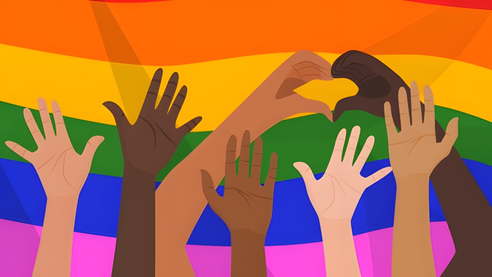
Think about the last time you felt a spark of attraction toward someone. You probably did not choose to feel it, and you probably could not have talked yourself out of it. That pull — toward men, toward women, or toward more than one gender — sits at the heart of what we call sexual orientation. It shapes who we date, who we fall in love with, the communities we join, and, for many people, how the wider world treats us.
Sexual orientation is about who you are attracted to. It is a different thing from gender identity, which is your own inner sense of your gender. However, given that the two concepts are often bundled together under the same umbrella (LGBTQ+) and in the same struggles for rights, this chapter will also include discussion of gender identity and related topics.
13.1 What Are Sexual Orientation & Gender Identity?
To whom are you attracted? Men? Women? More than one gender? People who do not fit neatly into either category? We tend to live in an either/or world. Sexual orientation is no exception to this habit of dividing everything into neat, non-overlapping categories. Many people assume you are simply gay or straight, with nothing in between. The reality is far more complex, and people rarely fit into tidy boxes.
According to the American Psychological Association, sexual orientationSexual orientationAn enduring pattern of emotional, romantic, or sexual attraction to others.View in glossary → is an enduring pattern of emotional, romantic, or sexual attraction to others (American Psychological Association, 2021)ReferenceAmerican Psychological Association. (2021). Sexual orientation and gender diversity. https://www.apa.org/topics/lgbtq. The key word is enduring — orientation is not a passing mood but a stable part of how a person is wired. It is also separate from a person's body. A person of any biological sex, and any gender, is capable of being attracted to people of any gender.
This is where a common mix-up happens, so let's clearly lay this out. Sexual orientation is who you are drawn to sexually and/or romantically. Gender identityGender identityA person's own internal sense of being a man, a woman, both, or neither; distinct from sexual orientation.View in glossary → is your own internal sense of being a man, a woman, both, or neither. Someone whose gender identity matches the sex they were assigned at birth is cisgenderCisgenderDescribing a person whose gender identity matches the sex they were assigned at birth; such people are sometimes called a cis man or cis woman.View in glossary →, while someone whose gender identity differs from that assigned sex at birth is transgenderTransgenderDescribing a person whose gender identity differs from the sex they were assigned at birth; a transgender person can have any sexual orientation.View in glossary →. These are different dimensions of a person. A transgender woman, for example, has a sexual orientation just like anyone else. She may be attracted to men, to women, or to more than one gender. Being transgender tells you about a person's gender, but not about who they love.
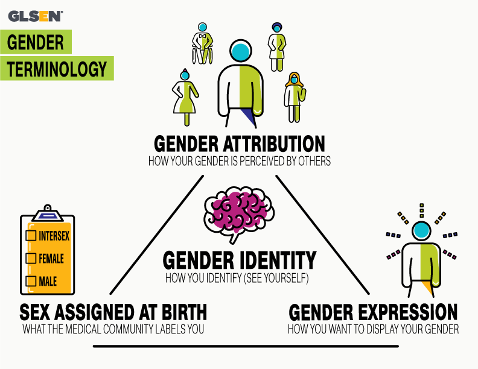
The ABCs of LGBTQ
Most people describe their orientation with a label. The most familiar is heterosexualHeterosexualAttracted to a different sex or gender; commonly called "straight."View in glossary →, or "straight," meaning attraction to people of the opposite gender. Its counterpart is homosexualHomosexualAttracted to the same sex or gender; commonly called "gay." The clinical-sounding term itself is fairly modern, coined in the late 1800s.View in glossary →, or "gay," meaning attraction to people of the same gender. In everyday use, lesbianLesbianA woman attracted to other women.View in glossary → refers to a woman who is attracted to other women, while gayGayAttracted to the same sex or gender; often used for men specifically, and also as a broad term for anyone who is not heterosexual.View in glossary → often refers to men. People who identify as bisexualBisexualDescribing a person attracted to more than one gender.View in glossary → are attracted to both women and men. PansexualPansexualAttracted to people of all genders, with gender mattering little to the attraction.View in glossary → describes attraction to people of all genders, including people who are trans or non-binary, with gender itself mattering little to the attraction. Finally, queerQueerAn umbrella term embraced by many who are not straight or gender-conforming; once a slur, now widely reclaimed, though not everyone is comfortable with it.View in glossary → is an umbrella term embraced by many who do not see themselves as straight or gender-conforming and who want to push past traditional categories. The word queer was once a slur, but many people have reclaimed it with pride. Although, still to this day, not everyone is comfortable with that term, given its roots in homophobia and sexual minority violence (concepts that are more fully explained later in the chapter).
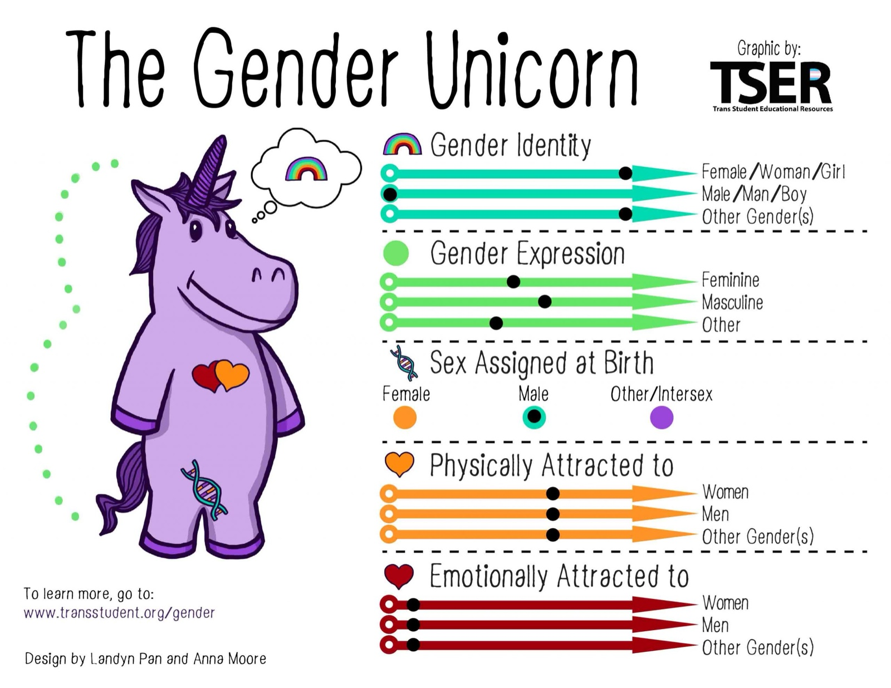
When it comes to gender identity, there are a few commonly accepted terms. People who were assigned female at birth but then transitioned to men later in life are most often referred to as trans menTrans manA person assigned female at birth who identifies and lives as a man; also referred to as female-to-male, or FTM.View in glossary →. Such people may sometimes also be referred to as female-to-male, or FTM, especially when describing their transition journey. An increasingly popular term is transmasculineTransmasculineAn umbrella term for people assigned female at birth who move in a masculine direction, especially those who do not identify strictly as men.View in glossary →, especially for FTM people who don't wish to identify as men. For people who were assigned male at birth but then transition to women, we use the terms trans womenTrans womanA person assigned male at birth who identifies and lives as a woman; also referred to as male-to-female, or MTF.View in glossary →, male-to-female (MTF) or transfeminineTransfeminineAn umbrella term for people assigned male at birth who move in a feminine direction, especially those who do not identify strictly as women.View in glossary →.
There is a growing movement to simply refer to these individuals as men and women, removing the trans modifier entirely. This is the sentiment behind such phrases as "trans women are women." Referring to someone exclusively or predominantly as a trans woman or trans man may feel "othering," as their goal is often simply to live as a woman or man like any other. A countermovement is to refer to non-trans women and men as cisgendered. Using labels like cis-woman and cis-man for people whose assigned gender matches their gender identity is a way to remove the "otherness" of using words like trans.
This chapter will use the inclusive term LGBTQ+ to describe these various groups, with the acronym standing for lesbian, gay, bisexual, transgender, queer, plus. The "plus" is doing a lot of heavy lifting, given all of the other orientation identities captured in this umbrella term. A more accurate acronym might be LGBTQ+QIPP2SAA, with the additions of questioning, intersex, pansexual, polyamorous, two-spirit, asexual, and ally. There are yet other terms that are generally recognized as non-straight identities, such as Flexual (flexible/fluid sexuality), gender-nonconforming, gender-fluid, androgynous, and "genderfuck," the latter being a term used to subvert and mock traditional gender roles.
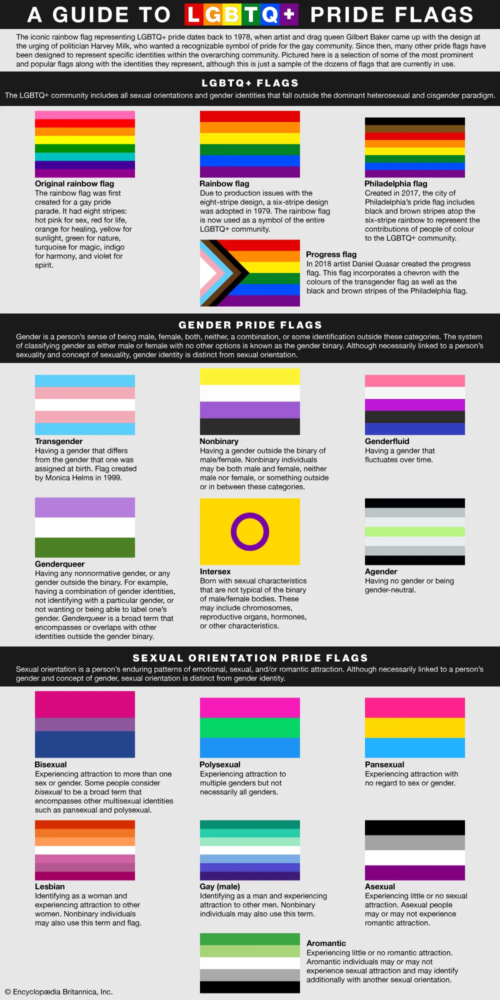
Check out the GLAAD Glossary of Terms if you'd like to learn about even more sexual identities.
Identity Is Not the Same as Behavior
The label a person identifies with does not necessarily describe the kind of sexual behavior they engage with. To put it plainly, lots of people who identify as straight have sex with people of the same gender. These experiences may be occasional or even routine. This does not mean anyone is confused or lying. It means that identity, attraction, and behavior are three separate things that do not always line up.
Psychologist Fritz Klein captured this in the 1970s with a tool called the Klein Sexual Orientation GridKlein Sexual Orientation GridFritz Klein's tool that measures orientation across several ingredients — attraction, behavior, fantasy, emotional and social preference, self-label, and change over time.View in glossary → (Klein, 1978)ReferenceKlein, F. (1978). The bisexual option. Arbor House.. Klein argued that orientation is not one thing but a bundle of at least seven ingredients: who you are sexually attracted to, who you have sex with, who you fantasize about, who you feel emotionally close to, who you socialize with, how you label yourself, and how all of this might shift over time. A single person can land in different places on these dimensions — perhaps being deeply in love with a partner of one gender while fantasizing about another. Klein's grid makes room for the messiness of real life sexuality.
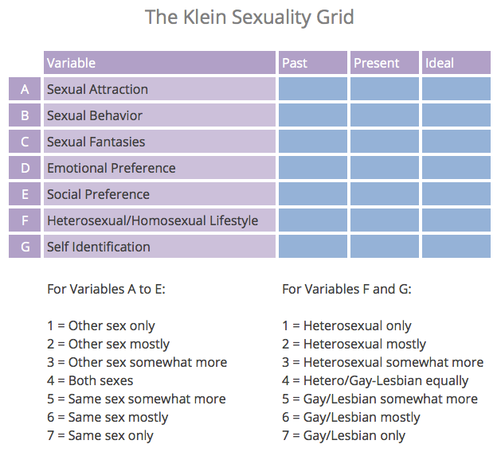
A woman calls herself straight but has sometimes had sex with women. This best shows that:
Measuring Something That Resists Measurement
Klein was building on a famous earlier effort. In 1948, sex researcher Alfred Kinsey shocked the public by reporting that same-sex behavior was far more common than anyone had once believed (Kinsey et al., 1948)ReferenceKinsey, A. C., Pomeroy, W. B., & Martin, C. E. (1948). Sexual behavior in the human male. W. B. Saunders.. Instead of sorting people into "heterosexual" and "homosexual," Kinsey had his participants place themselves on a scale. The Kinsey ScaleKinsey ScaleA 0-to-6 scale, introduced by Alfred Kinsey, placing people along a continuum from exclusively heterosexual to exclusively homosexual.View in glossary → runs from 0 (completely heterosexual) to 6 (completely homosexual), with the numbers in between capturing various shades of bisexuality. Kinsey insisted that people were not permanently glued to one number but could move around on the scale across their lives and with different partners.
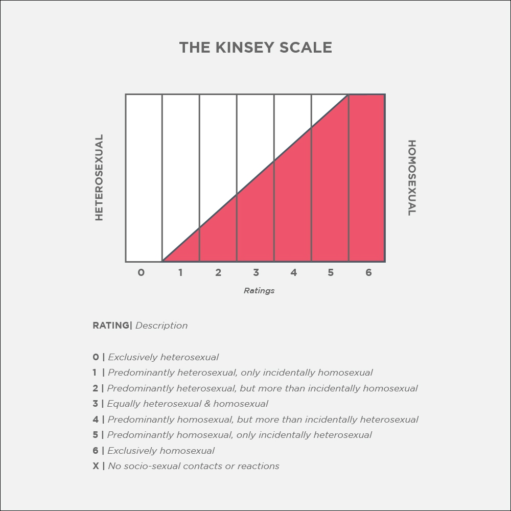
Kinsey's scale was a breakthrough, but it had a flaw. By putting heterosexuality and homosexuality at opposite ends of a single line, it implied that being more attracted to one gender automatically meant being less attracted to the other. Later researchers fixed this by using two separate scales — one measuring attraction to men, another measuring attraction to women. That way, a person could be high on both, low on both, or anywhere in between. Two-dimensional models, and richer tools like Klein's grid, give us a far more accurate picture than a single either/or question ever could.
Orientation Across Cultures and Time
It is tempting to assume that the categories we use today are timeless. They are not. The words heterosexual and homosexual did not even exist until the late 1800s (Katz, 2007)ReferenceKatz, J. N. (2007). The invention of heterosexuality. University of Chicago Press.. People have always had same-sex relationships, but the idea that such attraction defines a whole type of person is a fairly recent idea.
Other cultures have organized sexuality in strikingly different ways. Among many Indigenous North American peoples, Two-SpiritTwo-SpiritA term used by some Indigenous North American peoples for individuals who blend masculine and feminine roles, historically often honored as spiritual leaders.View in glossary → individuals — who blend masculine and feminine roles — have often been honored as spiritual leaders (Robinson, 2020)ReferenceRobinson, M. (2020). Two-spirit identity in a time of gender fluidity. Journal of Homosexuality, 67(12), 1675–1690. https://doi.org/10.1080/00918369.2019.1613853. Among the Marind-anim of New Guinea, many men were expected to hold multiple sexual roles, often having partners of different sexes at the same time. In some societies, same-sex relationships have been an expected stage of life that people pass through before marriage. The lesson is not that any one culture has it right, but that the tidy gay/straight split many of us grew up with is just one view of a particular place and time.

Which fact best shows that fixed gay and straight categories are not natural or universal?
13.2 How Common Is It? Prevalence and Fluidity
Before reading on, take a guess: out of every 100 Americans, how many do you think identify as lesbian, gay, bisexual, or transgender?
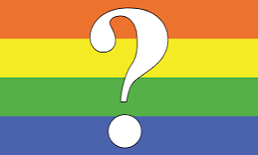
Surveys find that the average American estimates that roughly one in four people — about 24% — is gay or lesbian (Gallup, 2019)ReferenceGallup. (2019). Americans still greatly overestimate U.S. gay population. https://news.gallup.com/poll/259571. As you'll soon read, the actual number is quite a bit lower.
LGBTQ+ Demographics
The most recent national polling finds that about 9% of U.S. adults identify as lesbian, gay, bisexual, transgender, or something other than straight (Gallup, 2026a)ReferenceGallup. (2026a). LGBTQ+ identification in the U.S. https://news.gallup.com/poll/702206. That figure has more than doubled since 2012, when it was 3.5%. Within that 9%, the largest group by far is bisexual people, who make up more than half of all LGBTQ+ adults. Gay and lesbian people each account for roughly 1–2% of adults, and transgender people also make up a little over 1% (Gallup, 2026a)ReferenceGallup. (2026a). LGBTQ+ identification in the U.S. https://news.gallup.com/poll/702206.
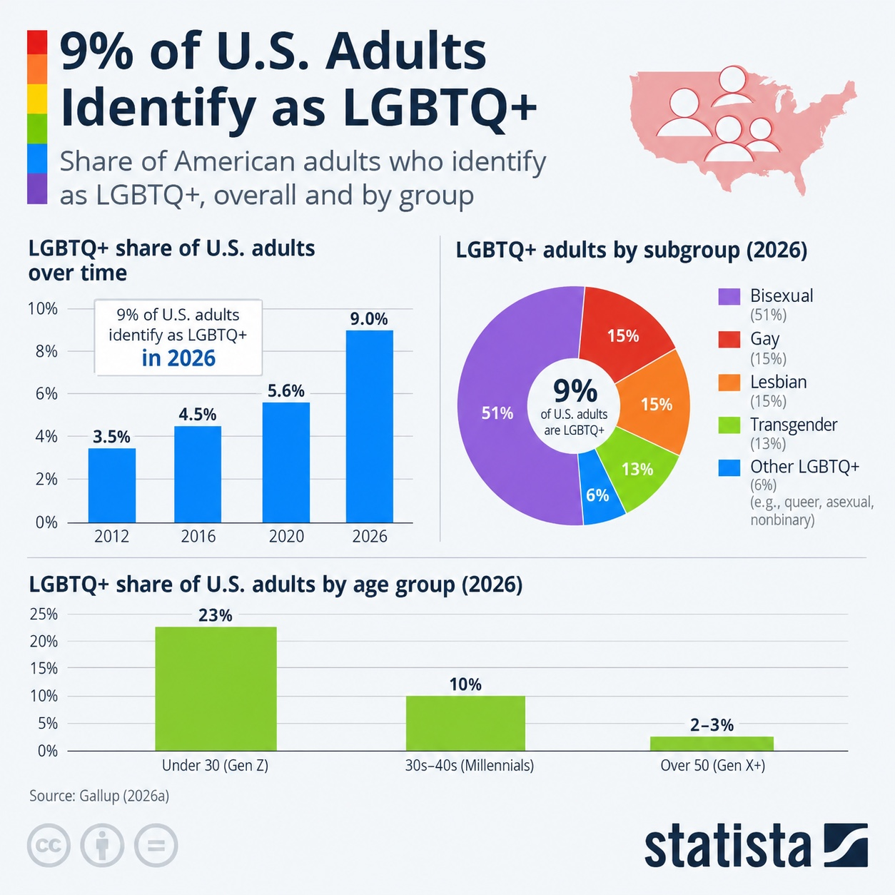
The most striking pattern is generational. Among adults under 30 — Generation Z — about 23% identify as LGBTQ+, compared with roughly 10% of adults in their thirties and forties and only 2 to 3% of adults over 50 (Gallup, 2026a)ReferenceGallup. (2026a). LGBTQ+ identification in the U.S. https://news.gallup.com/poll/702206. Why the steep jump? Almost certainly it is not that today's young people are biologically different from their grandparents. Given that stigma against LGBTQ+ people has decreased greatly over the past few decades, young people may feel safer publicly claiming an identity that earlier generations would have kept hidden. There is also a large gender gap among the young: close to a third of Gen Z women identify as LGBTQ+, compared with about one in eight Gen Z men, and most of that difference comes from women identifying as bisexual (Gallup, 2026a)ReferenceGallup. (2026a). LGBTQ+ identification in the U.S. https://news.gallup.com/poll/702206.
As discussed before, sexual identity and sexual behavior are two different things. About 17% of women and 6% of men report having had sex with someone of the same gender at some point in their lives. Of the women who report same-sex experiences, most say they are attracted almost exclusively to men, and many identify as straight (Copen et al., 2016)ReferenceCopen, C. E., Chandra, A., & Febo-Vazquez, I. (2016). Sexual behavior, sexual attraction, and sexual orientation among adults aged 18–44 in the United States: Data from the 2011–2013 National Survey of Family Growth. National Health Statistics Reports, (88), 1–14.. This isn't as true for men, with only a minority of men who have had sex with other men self-labeling as straight. This may mean that women are more likely to "experiment" with same-gender sex, even if they're primarily attracted to members of the opposite sex. It could also mean that women are simply more willing to report having same-gender sex than men are. It's impossible to say, given that all of this data is self-report.
Who Are LGBTQ+ People?
Ask people to picture a "typical" gay person and many imagine a white, wealthy, college-educated man in a big coastal city. The data tell a different story. Women make up the majority of LGBTQ+ adults, a large share being people of color (Gallup, 2026a)ReferenceGallup. (2026a). LGBTQ+ identification in the U.S. https://news.gallup.com/poll/702206. LGBTQ+ people live in every region of the country, not just the coasts. Rates are broadly similar across racial and ethnic groups. LGBTQ+ people are also, on average, no wealthier than anyone else — and some groups within the community face higher rates of poverty, particularly people who are transgender. The glossy stereotype is mostly a media creation, not a description of real LGBTQ+ people.
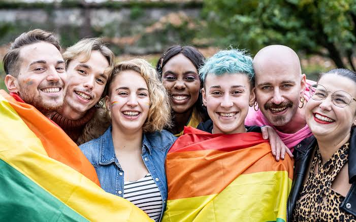
Which group makes up the largest share of LGBTQ+ adults today?
Sexual & Gender Fluidity
For many people, orientation feels fixed from early on. For others, it shifts. Psychologist Lisa Diamond has spent decades following the same women over time and documenting what she calls sexual fluiditySexual fluidityReal change over time in a person's attractions, behavior, or identity; somewhat more common on average in women.View in glossary → — changes in attraction, behavior, or identity across a person's life (Diamond, 2008)ReferenceDiamond, L. M. (2008). Sexual fluidity: Understanding women's love and desire. Harvard University Press.. In one long-running study, about two-thirds of the women changed how they labeled themselves over roughly a decade, and about a third changed more than once (Diamond, 2008)ReferenceDiamond, L. M. (2008). Sexual fluidity: Understanding women's love and desire. Harvard University Press.. Importantly, more women adopted the bisexual label than dropped it, which suggests that bisexuality is a stable destination for many, not just a "pit stop" on the way to being gay or straight.
Sexual fluidity is not equal across genders. On average, women's sexuality tends to be more fluid than men's, and men tend to show more consistent, narrowly focused patterns of arousal (Diamond, 2014)ReferenceDiamond, L. M. (2014). Gender and same-sex sexuality. In D. L. Tolman & L. M. Diamond (Eds.), APA handbook of sexuality and psychology (Vol. 1, pp. 629–652). American Psychological Association.. This is a difference in averages, not a rule about any individual — plenty of men experience shifts, and plenty of women feel fixed. It is also part of why, across nearly every survey, women are roughly twice as likely as men to identify as bisexual.
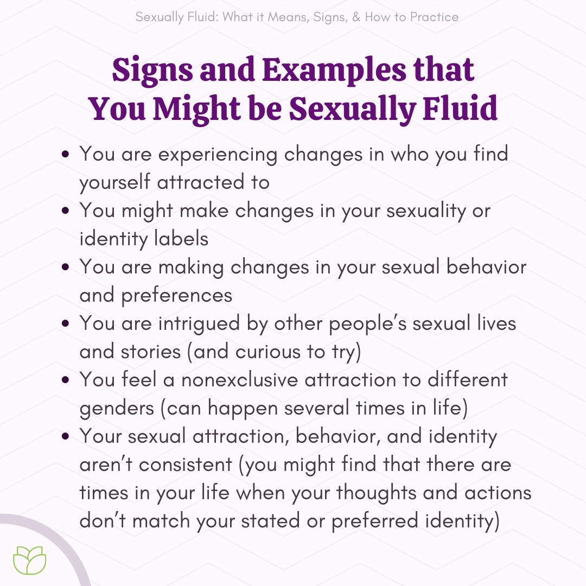
Gender identity can shift as well, and this should not be confused with sexual fluidity. Gender fluidityGender fluidityFlexibility or change over time in a person's own internal sense of their gender; documented most clearly in longitudinal studies of children and adolescents.View in glossary → refers to flexibility or change over time in a person's own internal sense of their gender (Diamond, 2020)ReferenceDiamond, L. M. (2020). Gender fluidity and nonbinary gender identities among children and adolescents. Child Development Perspectives, 14(2), 110–115. https://doi.org/10.1111/cdep.12366. For most people, gender identity settles early and stays stable throughout life. For a smaller number, it is more variable. Some individuals identify as genderfluid, moving between masculine, feminine, both, or neither at different times. Others find that their sense of gender shifts more gradually as they grow older. As with sexual fluidity, fluid gender identities appear to be reported more openly among younger generations, and they are documented most clearly in longitudinal studies of children and adolescents, whose early gender identifications are more likely to change over time (Steensma et al., 2013; Diamond, 2020)ReferencesSteensma, T. D., McGuire, J. K., Kreukels, B. P. C., Beekman, A. J., & Cohen-Kettenis, P. T. (2013). Factors associated with desistence and persistence of childhood gender dysphoria: A quantitative follow-up study. Journal of the American Academy of Child & Adolescent Psychiatry, 52(6), 582–590. https://doi.org/10.1016/j.jaac.2013.03.016
Diamond, L. M. (2020). Gender fluidity and nonbinary gender identities among children and adolescents. Child Development Perspectives, 14(2), 110–115. https://doi.org/10.1111/cdep.12366. Such identities are neither new nor uniquely Western — many cultures have long recognized genders beyond a fixed man/woman binary, from the Two-Spirit traditions of some Indigenous North American peoples to the hijra of South Asia. The takeaway mirrors the one for sexual fluidity: gender is fixed and clear-cut for most people, but a meaningful minority show real and valid change in their gender identity over time.
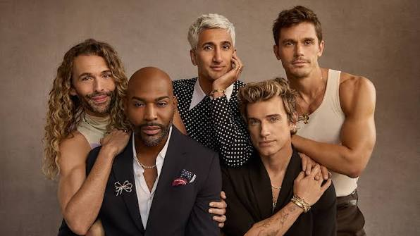
What does research suggest about sexual fluidity between women and men?
13.3 What Shapes Sexual Orientation?
Researchers who study sexual orientation are often asked, "What makes someone gay?" Pause a moment and ask yourself why this might not be the right question. We rarely demand to know what "causes" heterosexuality. The very framing smuggles in the assumption that being straight is the natural default and everything else needs explaining. This assumption is termed heterosexismHeterosexismThe built-in assumption that everyone is, or should be, heterosexual; usually unintentional but marginalizing. Also called heteronormativity.View in glossary →. This is why scientists have tried to tackle the issue more broadly, asking what factors determine a person's sexual orientation, whether straight or LGBTQ+.
Nature vs. Nurture
For much of the twentieth century, psychologists leaned on nurture-based explanations. Sigmund Freud, for instance, speculated that male homosexuality grew out of a particular family pattern, such as an overbearing mother and a distant father. Theories like this have not survived decades of careful study. Consider three findings that pure-upbringing accounts cannot explain.
- Sexual orientation runs in biological families, with some families having more LGBTQ+ members than you would expect by chance (Bailey & Pillard, 1991; Bailey et al., 1993)ReferencesBailey, J. M., & Pillard, R. C. (1991). A genetic study of male sexual orientation. Archives of General Psychiatry, 48(12), 1089–1096. https://doi.org/10.1001/archpsyc.1991.01810360053008
Bailey, J. M., Pillard, R. C., Neale, M. C., & Agyei, Y. (1993). Heritable factors influence sexual orientation in women. Archives of General Psychiatry, 50(3), 217–223.. And, it's not that being raised in a "gay friendly" family causes this trend. When someone is adopted into these family lines, they're not more likely to be LGBTQ+ than average. When someone is adopted out of these family lines and into families with low rates of LGBTQ+ orientations, that adopted person is more likely to be LGBTQ+ than average (for a review, see Bragazzi et al., 2026ReferenceBragazzi, N., Farah, R., & Khamisy-Farah, R. (2026). Unraveling the genetics of sexual orientation: A historical and contemporary perspective. The Israel Medical Association Journal, 28, 126–132.). This is exactly what you would find with other genetic traits, such as eye color. Clearly, there is something in our genetics related to sexual orientation. We now have even clearer evidence from large-scale genomic studies, which find that sexual orientation is significantly tied to specific genes (Ganna et al., 2019)ReferenceGanna, A., Verweij, K. J. H., Nivard, M. G., Maier, R., Wedow, R., Busch, A. S., Abdellaoui, A., Guo, S., Sathirapongsasuti, J. F., 23andMe Research Team, … Zietsch, B. P. (2019). Large-scale GWAS reveals insights into the genetic architecture of same-sex sexual behavior. Science, 365(6456), eaat7693. https://doi.org/10.1126/science.aat7693. - Children who are raised by same-gender parents are no more likely to end up LGBTQ+ themselves than someone in the general population. If you could "nurture" someone into becoming queer, surely having gay parents would have some sort of effect (Bos et al., 2016)ReferenceBos, H., Knox, J. R., van Rijn-van Gelderen, L., & Gartrell, N. K. (2016). Same-sex and different-sex parent households and child health outcomes. Journal of Developmental & Behavioral Pediatrics, 37(3), 179–187. https://doi.org/10.1097/DBP.0000000000000288.
- Same-sex behavior turns out to be incredibly common throughout the animal kingdom. There are thousands of known species where a small, but significant proportion of animals (often 2–10%) seem to prefer same-gender sex over opposite-gender sex (Bailey & Zuk, 2009; Gómez et al., 2023)ReferencesBailey, N. W., & Zuk, M. (2009). Same-sex sexual behavior and evolution. Trends in Ecology & Evolution, 24(8), 439–446.
Gómez, J. M., Gónzalez-Megías, A., & Verdú, M. (2023). The evolution of same-sex sexual behaviour in mammals. Nature Communications, 14(1), 5719. https://doi.org/10.1038/s41467-023-41290-x. Same-gender sex is commonly found among lions, flamingos, and even fruit flies. If same-gender attraction was the product of nurture factors, such as upbringing or culture, we wouldn't expect to find it in non-human animals.
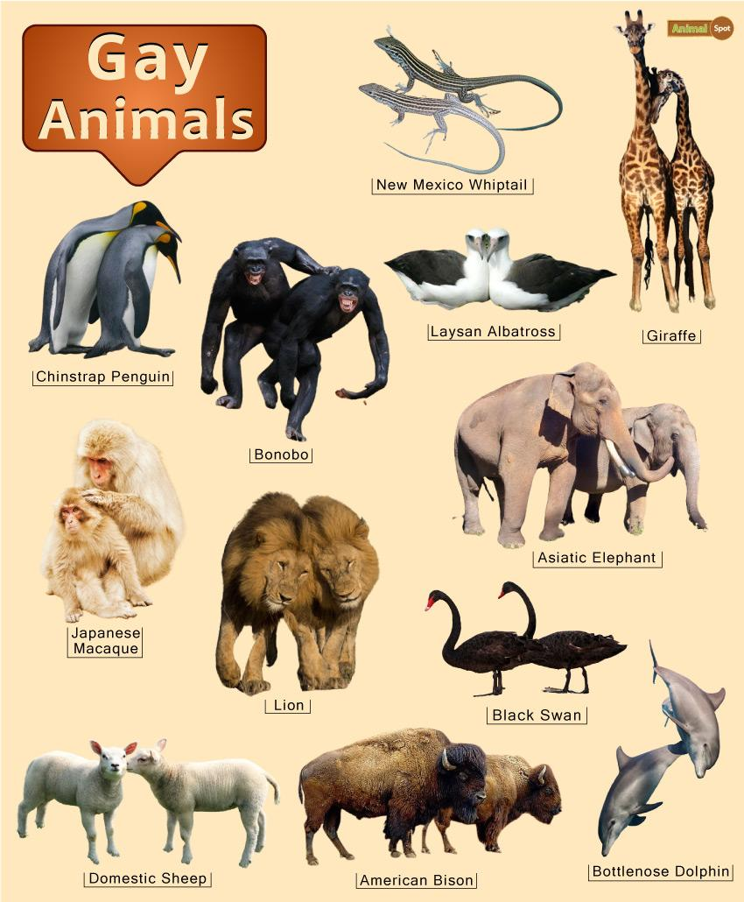
For more fun facts about gay animals, visit www.animalspot.net/gay-animals.
Genes and Heritability
If orientation is partly inherited, how much? The clearest evidence comes from twin studies and large genetic analyses. Identical twins, who share essentially all of their DNA, are more likely to share an orientation than fraternal twins, who do not. The largest study of its kind analyzed the DNA of nearly half a million people and estimated that genetics account for roughly a third — about 32% — of the differences between people in same-sex behavior (Ganna et al., 2019)ReferenceGanna, A., Verweij, K. J. H., Nivard, M. G., Maier, R., Wedow, R., Busch, A. S., Abdellaoui, A., Guo, S., Sathirapongsasuti, J. F., 23andMe Research Team, … Zietsch, B. P. (2019). Large-scale GWAS reveals insights into the genetic architecture of same-sex sexual behavior. Science, 365(6456), eaat7693. https://doi.org/10.1126/science.aat7693.
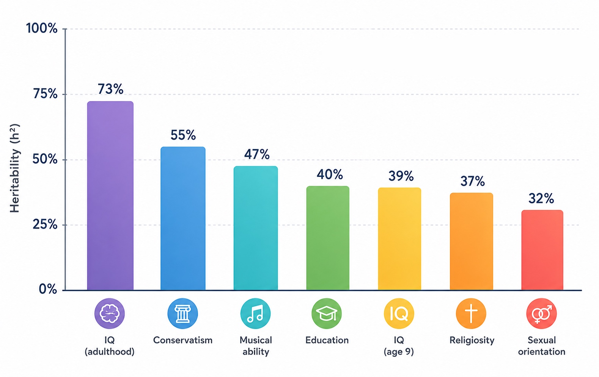
Two points from that study matter enormously. First, there is no single "gay gene." Instead, thousands of genes each make a tiny contribution, which means no genetic test could ever predict a person's orientation. Second, genes are only part of the story, leaving about two-thirds of variance in sexual orientation unexplained. As you'll soon read, the remaining influence likely comes from other biological factors outside of our genome.
Some research also points to epigeneticsEpigeneticsChemical tags that switch genes on or off without changing the DNA itself; epigenetic marks are one proposed influence on the development of sexual orientation.View in glossary →, chemical tags that switch genes on or off without changing the DNA itself, as another piece of the puzzle. For example, a study by Rice and colleagues (2012)ReferenceRice, W. R., Friberg, U., & Gavrilets, S. (2012). Homosexuality as a consequence of epigenetically canalized sexual development. The Quarterly Review of Biology, 87(4), 343–368. https://doi.org/10.1086/668167 found that sexually antagonistic epi-marks were less prevalent in lesbians than in straight women. These epi-marks typically buffer a female fetus from being "masculinized" by natural surges in a pregnant woman's testosterone levels. It is believed that hormones play a major role in the development of a person's sexual orientation, especially during fetal gestation. Another study has found that epigenetic markers may predict a person's sexual orientation with up to 70% accuracy, indicating this is a valuable area for future research (Balter, 2015)ReferenceBalter, M. (2015). Can epigenetics explain homosexuality puzzle? Science, 350(6257), 148. https://doi.org/10.1126/science.350.6257.148.
What does the roughly 32% heritability of same-sex behavior tell us?
Prenatal Hormone Theory
A person's sexual orientation may not be 100% determined by genes, but it is likely determined well before birth. One of the best supported explanations is prenatal hormone theoryPrenatal hormone theoryThe best-supported biological account of sexual orientation, proposing that the level of androgens a fetus is exposed to before birth shapes later attraction.View in glossary →, which proposes that sexual orientation is largely shaped by the level of androgensAndrogensA group of hormones, including testosterone, that guide male-typical development before birth and are central to the prenatal hormone theory of sexual orientation.View in glossary → — male hormones such as testosterone — that a fetus is exposed to before birth (Bao & Swaab, 2011; Swift-Gallant et al., 2023)ReferencesBao, A., & Swaab, D. F. (2011). Sexual differentiation of the human brain: Relation to gender identity, sexual orientation and neuropsychiatric disorders. Frontiers in Neuroendocrinology, 32(2), 214–226. https://doi.org/10.1016/j.yfrne.2011.02.007
Swift-Gallant, A., Aung, T., Rosenfield, K., Dawood, K., & Puts, D. (2023). Organizational effects of gonadal hormones on human sexual orientation. Adaptive Human Behavior and Physiology, 9(4), 344–370. https://doi.org/10.1007/s40750-023-00226-x. The theory holds that when prenatal androgen exposure crosses a certain threshold, the developing person tends toward attraction to women (gynephilicGynephilicSexually attracted to women. In the prenatal hormone theory, higher prenatal androgen exposure is linked to a gynephilic pattern.View in glossary →); while below that threshold, the person tends toward attraction to men (androphilicAndrophilicSexually attracted to men. In the prenatal hormone theory, lower prenatal androgen exposure is linked to an androphilic pattern.View in glossary →). In this model, most men and lesbian women fall on the higher-androgen side, and most women and gay men on the lower-androgen side.
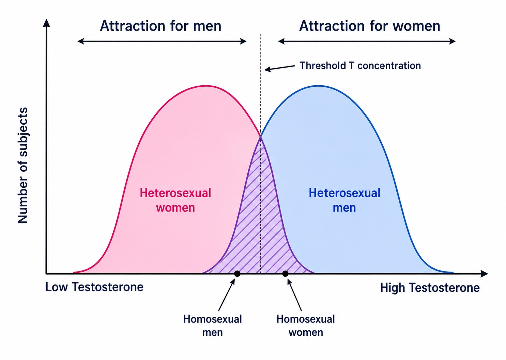
Two lines of evidence support the idea. In animals, deliberately changing androgen levels during development shifts later mating preferences (Henley et al., 2010)ReferenceHenley, C. L., Nunez, A. A., & Clemens, L. G. (2010). Exogenous androgen during development alters adult partner preference and mating behavior in gonadally intact male rats. Hormones and Behavior, 57(4–5), 488–495. https://doi.org/10.1016/j.yhbeh.2010.02.007. Simply exposing developing rat fetuses to elevated androgen causes these rat pups to develop attraction to females, regardless of the rat's sex. Introducing androgen blockers during gestation creates rats that are predominately attracted to males, regardless of the rat's sex. This effect has been found broadly among many species, including primates (Roselli & Stormshak, 2009; Thornton et al., 2009)ReferencesRoselli, C. E., & Stormshak, F. (2009). The neurobiology of sexual partner preferences in rams. Hormones and Behavior, 55(5), 611–620. https://doi.org/10.1016/j.yhbeh.2009.03.013
Thornton, J., Zehr, J. L., & Loose, M. D. (2009). Effects of prenatal androgens on rhesus monkeys: A model system to explore the organizational hypothesis in primates. Hormones and Behavior, 55(5), 633–644. https://doi.org/10.1016/j.yhbeh.2009.03.015. Effects are more pronounced if hormone exposure happens during later gestation, when the brain is being fine-tuned (Herman et al., 2000)ReferenceHerman, R. A., Jones, B., Mann, D. R., & Wallen, K. (2000). Timing of prenatal androgen exposure: Anatomical and endocrine effects on juvenile male and female rhesus monkeys. Hormones and Behavior, 38(1), 52–66. https://doi.org/10.1006/hbeh.2000.1608.
Of course, we cannot conduct such studies on humans for ethical reasons. However, naturally occurring experiments in humans seem to align well with animal studies. For example, girls with congenital adrenal hyperplasiaCongenital adrenal hyperplasia (CAH)A condition that exposes a developing fetus to unusually high levels of androgens; girls with CAH are somewhat more likely to be attracted to women, offering evidence for the prenatal hormone theory.View in glossary → — a condition that exposes them to unusually high androgens before birth — grow up significantly more likely to be attracted to women than their unaffected sisters (Meyer-Bahlburg et al., 2008)ReferenceMeyer-Bahlburg, H. F. L., Dolezal, C., Baker, S. W., & New, M. I. (2008). Sexual orientation in women with classical or non-classical congenital adrenal hyperplasia as a function of degree of prenatal androgen excess. Archives of Sexual Behavior, 37(1), 85–99. https://doi.org/10.1007/s10508-007-9265-1. There are many biomarkers that indicate levels of prenatal androgen exposure that are also tied with sexual orientation. Gay men tend to have shorter ring-fingers and sharper hearing than straight men, which are both signs of low androgen exposure in the womb (Delhez et al., 2019; Grimbos et al., 2010)ReferencesDelhez, A., Lefebvre, P., Péqueux, C., Malgrange, B., & Delacroix, L. (2019). Auditory function and dysfunction: Estrogen makes a difference. Cellular and Molecular Life Sciences: CMLS, 77(4), 619–635. https://doi.org/10.1007/s00018-019-03295-y
Grimbos, T., Dawood, K., Burriss, R. P., Zucker, K. J., & Puts, D. A. (2010). Sexual orientation and the second to fourth finger length ratio: A meta-analysis in men and women. Behavioral Neuroscience, 124(2), 278–287. https://doi.org/10.1037/a0018764. Lesbians tend to be slightly better at spatial tasks but worse at verbal tasks than straight women, both related to high androgen exposure in the womb (Xu et al., 2017)ReferenceXu, Y., Norton, S., & Rahman, Q. (2017). Sexual orientation and neurocognitive ability: A meta-analysis in men and women. Neuroscience & Biobehavioral Reviews, 83, 691–696. https://doi.org/10.1016/j.neubiorev.2017.06.014. All of these bits of evidence add up to a convincing picture that prenatal hormones affect adult sexual orientation.
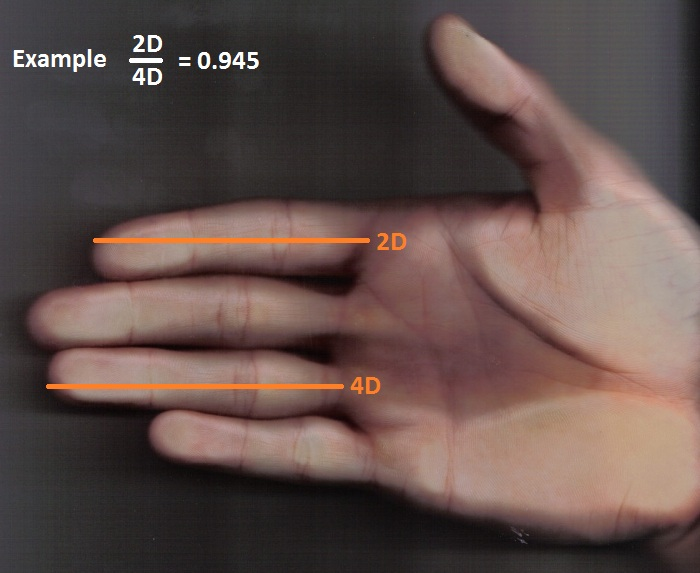
How do prenatal hormones translate into attraction years later? The leading idea points to the hypothalamusHypothalamusA small brain region involved in regulating sexual behavior; certain differences in it have been linked, on average, to sexual orientation.View in glossary →, a small brain region that helps govern sexual behavior. In a well-known study, a cluster of cells in the hypothalamus was found to be, on average, smaller in gay men than in straight men — closer in size to what is typically seen in women (LeVay, 1991; see also Byne et al., 2001)ReferencesLeVay, S. (1991). A difference in hypothalamic structure between heterosexual and homosexual men. Science, 253(5023), 1034–1037. https://doi.org/10.1126/science.1887219
Byne, W., Tobet, S., Mattiace, L. A., Lasco, M. S., Kemether, E., Edgar, M. A., Morgello, S., Buchsbaum, M. S., & Jones, L. B. (2001). The interstitial nuclei of the human anterior hypothalamus: An investigation of variation with sex, sexual orientation, and HIV status. Hormones and Behavior, 40(2), 86–92. https://doi.org/10.1006/hbeh.2001.1680. More recent studies using advanced brain scanning technology have largely confirmed these results (Hu et al., 2025)ReferenceHu, D., Rodkong, A., Folkierska-Zukowska, M., Skorska, M., Saokhieo, P., Peragine, D., Javier, C., Thurston, L., Jones, S., Supintham, T., Kaewthip, O., Wantanajittikul, K., Chariyalertsak, S., Saekho, S., & Vanderlaan, D. (2025). Brain imaging of hypothalamic volumes in relation to sexual and gender diversity in Thailand. https://doi.org/10.13140/RG.2.2.29308.81285. Other studies have found that the hypothalamus even responds differently when exposed to pheromones. Both gay men and straight women tend to respond most strongly to the smell of male pheromones, while lesbians and straight men tend to respond more to female pheromones (Savic et al., 2005; Berglund et al., 2006)ReferencesSavic, I., Berglund, H., & Lindström, P. (2005). Brain response to putative pheromones in homosexual men. Proceedings of the National Academy of Sciences, 102(20), 7356–7361. https://doi.org/10.1073/pnas.0407998102
Berglund, H., Lindström, P., & Savic, I. (2006). Brain response to putative pheromones in lesbian women. Proceedings of the National Academy of Sciences, 103(21), 8269–8274. https://doi.org/10.1073/pnas.0600331103.
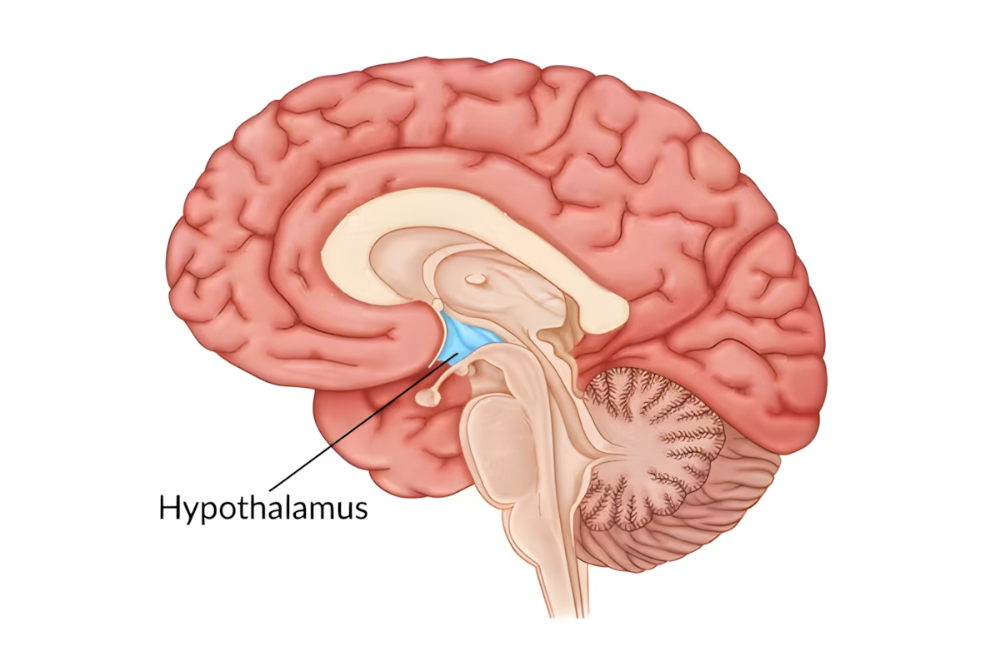
What does prenatal hormone theory propose about sexual orientation?
The Fraternal Birth Order Effect
One of the most reliably replicated findings in this field is also one of the strangest. On average, gay men have more older brothers than straight men do; and the effect comes specifically from older brothers, not older sisters. Each additional older brother raises the odds of a man being gay by roughly a third (Blanchard & Bogaert, 1996)ReferenceBlanchard, R., & Bogaert, A. F. (1996). Homosexuality in men and number of older brothers. American Journal of Psychiatry, 153(1), 27–31. https://doi.org/10.1176/ajp.153.1.27. This is called the fraternal birth order effectFraternal birth order effectThe reliable finding that gay men have, on average, more older biological brothers than straight men; each older brother raises the odds of being gay by roughly a third.View in glossary →, and it has been confirmed in samples around the world (Blanchard, 2018)ReferenceBlanchard, R. (2018). Fraternal birth order, family size, and male homosexuality: Meta-analysis of studies spanning 25 years. Archives of Sexual Behavior, 47(1), 1–15. https://doi.org/10.1007/s10508-017-1007-4. What could explain it? The leading hypothesis is a maternal immune response. When a woman carries a male fetus, her immune system may react to certain male-linked proteins, and with each successive son that response can grow stronger, subtly influencing the brain development of later-born sons (Bogaert et al., 2018)ReferenceBogaert, A. F., Skorska, M. N., Wang, C., Gabrie, J., MacNeil, A. J., Hoffarth, M. R., VanderLaan, D. P., Zucker, K. J., & Blanchard, R. (2018). Male homosexuality and maternal immune responsivity to the Y-linked protein NLGN4Y. Proceedings of the National Academy of Sciences, 115(2), 302–306. https://doi.org/10.1073/pnas.1705895114. Researchers estimate this mechanism accounts for perhaps 15 to 30% of gay men (Bogaert, 2006)ReferenceBogaert, A. F. (2006). Biological versus nonbiological older brothers and men's sexual orientation. Proceedings of the National Academy of Sciences, 103(28), 10771–10774. https://doi.org/10.1073/pnas.0511152103. Notably, the effect depends on how many biological older brothers a mother carried, not on how many brothers a boy is raised alongside — another clue that the cause is prenatal, not social.
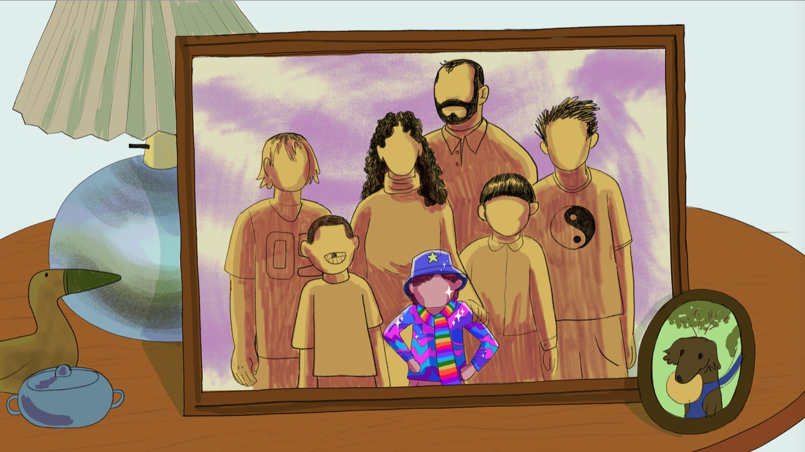
All of these different lines of evidence point toward sexual orientation being a product of a complex interaction between different biological inputs — from genes and epigenetics to prenatal hormones and birth-order effects. What's clear are two things: 1) A person's sexual orientation is likely not rooted in their upbringing, culture or other nurture factors, and 2) Sexual orientation is primarily determined by the time someone is born. This isn't to say that a person's sexual identity cannot be fluid or change over the course of their lifetime — research by Diamond and others shows this can clearly happen. But, a person's tendency toward a particular identity or fluidity between identities is something that is largely determined in the womb.
Explaining Trans Identities
Research explaining trans identities mirrors much of what has been found in research on lesbians and gay men, placing much of the emphasis on prenatal hormones. During fetal development, the genitals take shape in the first couple of months of pregnancy, but the brain is sexually organized later, and by a partly separate process. Because these two events happen at different times and can be influenced by different levels of hormones, it's biologically possible for the body to develop along one pathway while the brain is organized along another (Bao & Swaab, 2011)ReferenceBao, A., & Swaab, D. F. (2011). Sexual differentiation of the human brain: Relation to gender identity, sexual orientation and neuropsychiatric disorders. Frontiers in Neuroendocrinology, 32(2), 214–226. https://doi.org/10.1016/j.yfrne.2011.02.007.
Some of the most striking evidence comes from studies of the brain itself. Researchers examining cadavers' brains have repeatedly found that certain areas of the hypothalamus differ between men and women — and that in transgender people, these structures tend to resemble the person's experienced gender rather than their sex assigned at birth (Garcia-Falgueras & Swaab, 2008; Kruijver et al., 2000; Zhou et al., 1995)ReferencesGarcia-Falgueras, A., & Swaab, D. F. (2008). A sex difference in the hypothalamic uncinate nucleus: Relationship to gender identity. Brain, 131(12), 3132–3146. https://doi.org/10.1093/brain/awn276
Kruijver, F. P., Zhou, J. N., Pool, C. W., Hofman, M. A., Gooren, L. J., & Swaab, D. F. (2000). Male-to-female transsexuals have female neuron numbers in a limbic nucleus. The Journal of Clinical Endocrinology and Metabolism, 85(5), 2034–2041. https://doi.org/10.1210/jcem.85.5.6564
Zhou, J.-N., Hofman, M. A., Gooren, L. J. G., & Swaab, D. F. (1995). A sex difference in the human brain and its relation to transsexuality. Nature, 378(6552), 68–70. https://doi.org/10.1038/378068a0. Importantly, these differences did not seem to be explained by the hormones trans people take as adults. However, the picture is more complex than simply having a "female brain in a male body" or vice versa. When researchers look carefully at the brains of living trans people, they tend to find their structures are a blend between masculine, feminine and somewhere in-between (Guillamon et al., 2016)ReferenceGuillamon, A., Junque, C., & Gómez-Gil, E. (2016). A review of the status of brain structure research in transsexualism. Archives of Sexual Behavior, 45(7), 1615–1648. https://doi.org/10.1007/s10508-016-0768-5. This points to the brains of many trans people as being more "intersex" than strictly male or female.
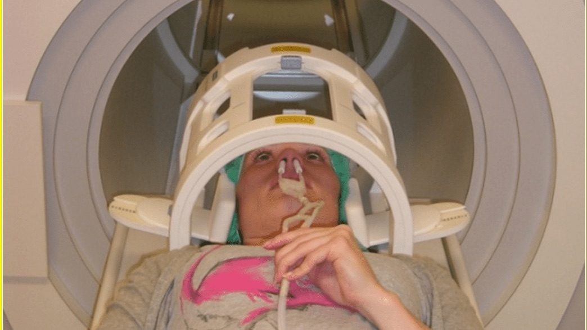
Just like with sexual orientation, genetics also appears to play a role in the development of gender identity. If one identical twin is trans, their identical sibling is far more likely to also be trans (Heylens et al., 2012)ReferenceHeylens, G., De Cuypere, G., Zucker, K. J., Schelfaut, C., Elaut, E., Vanden Bossche, H., De Baere, E., & T'Sjoen, G. (2012). Gender identity disorder in twins: A review of the case report literature. The Journal of Sexual Medicine, 9(3), 751–757. https://doi.org/10.1111/j.1743-6109.2011.02567.x. Genetic transcription studies find that trans people tend to display genetic differences related to how the body makes and responds to sex hormones. Prenatal hormones play a large factor, as many studies have found that high androgen exposure for female fetuses or low androgen for male fetuses is often predictive of gender dysphoria later in life (Meyer-Bahlburg et al., 2008; Reiner & Gearhart, 2004)ReferencesMeyer-Bahlburg, H. F. L., Dolezal, C., Baker, S. W., & New, M. I. (2008). Sexual orientation in women with classical or non-classical congenital adrenal hyperplasia as a function of degree of prenatal androgen excess. Archives of Sexual Behavior, 37(1), 85–99. https://doi.org/10.1007/s10508-007-9265-1
Reiner, W. G., & Gearhart, J. P. (2004). Discordant sexual identity in some genetic males with cloacal exstrophy assigned to female sex at birth. The New England Journal of Medicine, 350(4), 333–341. https://doi.org/10.1056/NEJMoa022236.
Taken together, these lines of evidence make a strong case that being transgender is not a lifestyle choice, a phase, or a product of upbringing, any more than being gay is. Both sexual and gender identity appear to take root early, in the developing brain, under the combined influence of genes and prenatal hormones.
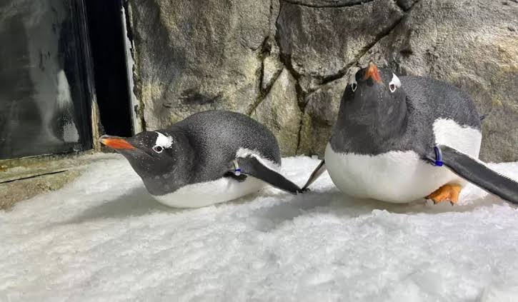
13.4 Living as a Sexual Minority
Knowing what orientation is and where it comes from is only part of the picture. The rest is lived experience: figuring out who you are, deciding when and whether to tell others, finding community, and building relationships and families.
Coming Out
For most people, being straight requires no announcement; the world simply assumes it. LGBTQ+ people do not get that option. The process of coming outComing outThe lifelong, repeated process of publicly acknowledging one's LGBTQ+ identity, which happens again and again because people are usually assumed to be straight.View in glossary → — publicly acknowledging one's identity — is not a single dramatic moment, but a lifelong, repeated process. Because people are assumed to be straight until they say otherwise, an LGBTQ+ person "comes out" again and again — to family, to new friends, to coworkers, to a new doctor.
Researchers have mapped this journey into stages. One of the more influential theories is the Cass Identity Model (1979)ReferenceCass, V. C. (1979). Homosexual identity formation: A theoretical model. Journal of Homosexuality, 4(3), 219–235. https://doi.org/10.1300/J082v04n03_01, which includes 6 stages:
Stage 1: Identity Confusion
The person experiences their first conscious thoughts, feelings or attractions toward members of the same sex. This is often confusing and can be distressing, as it violates the "default straight" mode we all grow up with. It's common for people in this stage to deny any same-sex attractions they have, even to themselves.
Stage 2: Identity Comparison
The person begins to accept the possibility that they may not be straight, but they aren't ready to acknowledge it more broadly. They may think, "I might be gay, but not like them," as they realize that adopting an LGBTQ+ identity means giving up societal privileges and expectations for the typical heterosexual life (e.g., traditional marriage, family approval).
Stage 3: Identity Tolerance
The person comes to be more accepting of a burgeoning queer identity, but may feel isolated and lonely. This will optimally drive them to seek out other people in the LGBTQ+ community. This can mean visiting queer spaces, but more often now means using dating apps or other online apps to meet queer people.
Stage 4: Identity Acceptance
"I am gay and that's okay." This famous saying epitomizes this stage, as the person moves from merely tolerating their new identity to fully embracing it. The person starts to develop a positive narrative about their queer identity, often sharing this identity with family and close friends.
Stage 5: Identity Pride
One of the more controversial stages of this model, stage 5 holds that the person will fully immerse themselves in LGBTQ+ culture and may develop strong "us vs them" thinking about straight people. They may view heterosexuals as "the enemy" or "the oppressors" and become a "loud and proud" advocate for fellow queer people in their community. This stage is controversial, because only a small minority of LGBTQ+ people actively participate in pride rallies or directly confront homophobic people in their community. This stage also risks reinforcing the stereotype of the politically "radical" and "leftist" lesbian or gay man.
Stage 6: Identity Synthesis
"Being gay is an important part of me, but not the only part of me." At this stage, the anger and division of the preceding stage have softened. The person may come to appreciate all of the supportive straight people in their lives. This is often heralded as the "goal" of coming out, achieving an effortless, authentic way of living.
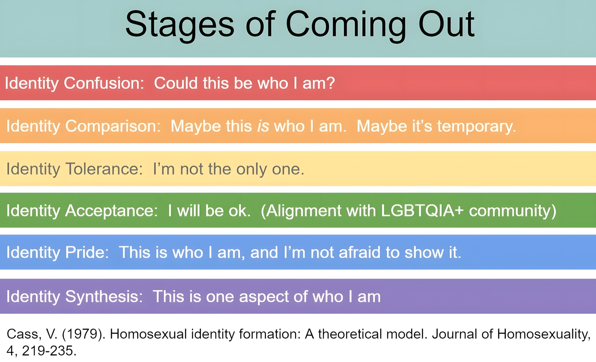
The Cass model has been adapted into many other coming out models over the years, but they all have similar elements — going from denial to acceptance to pride (Coleman, 1982)ReferenceColeman, E. (1982). Developmental stages of the coming out process. Journal of Homosexuality, 7(2–3), 31–43. https://doi.org/10.1300/J082v07n02_06. These models can offer a useful roadmap for the coming out process, but they don't describe everyone's journeys. Most queer people don't experience all of the stages, and there are many examples of people traveling backward or stalling out on this journey. For transgender people, coming out often includes socially or medically transitioning — a related but separate journey from disclosing a sexual orientation.
Disclosure is far from universal. Many LGBTQ+ people are out to some people and not others, and a large share never come out to their parents or other family members. Bisexual people, in particular, are considerably less likely than gay men or lesbians to be out to the important people in their lives, partly because their identity is so often doubted or dismissed (Pew Research Center, 2013)ReferencePew Research Center. (2013). A survey of LGBT Americans: Attitudes, experiences and values in changing times. https://www.pewresearch.org/social-trends/2013/06/13/a-survey-of-lgbt-americans.
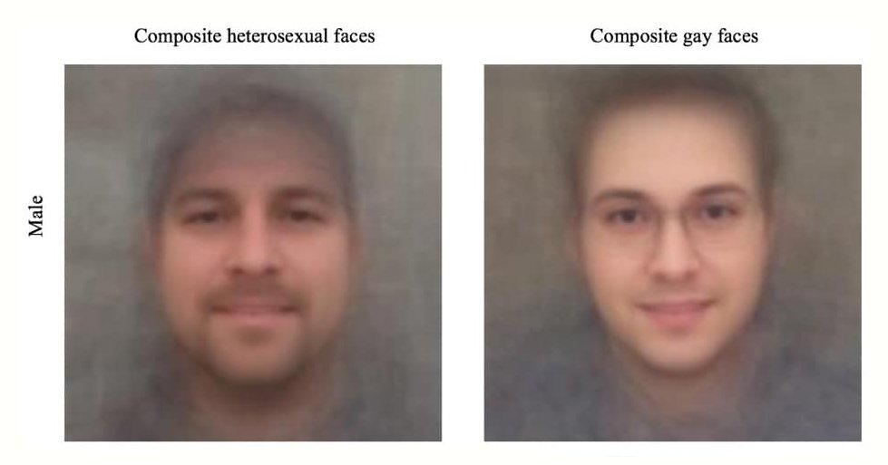
Why is coming out best described as a lifelong process rather than one event?
Transitioning
For many transgender people, an important part of living authentically is transitioningTransitioningThe process of bringing one's outward life and body into alignment with one's true gender identity, which may unfold across social, legal, and medical dimensions.View in glossary → — the process of bringing one's outward life and one's body into alignment with one's true gender identity. Transitioning is best understood not as a single event but as a personal journey that can unfold across social, legal, and medical dimensions. No two paths look exactly alike. Some people take every step available to them, others take only a few, and many feel no need for medical treatment at all. Whatever the path, the aim is the same: to relieve the distress that can accompany a mismatch between body and identity — known clinically as gender dysphoriaGender dysphoriaThe clinically significant distress that can arise from a mismatch between a person's body and their gender identity.View in glossary → — and to allow the person to live as their authentic self. Professional organizations such as the World Professional Association for Transgender Health publish widely used standards of care to guide this process (Coleman et al., 2022; American Psychological Association, 2015)ReferencesColeman, E., Radix, A. E., Bouman, W. P., Brown, G. R., de Vries, A. L. C., Deutsch, M. B., Ettner, R., Fraser, L., Goodman, M., Green, J., … Arcelus, J. (2022). Standards of care for the health of transgender and gender diverse people, version 8. International Journal of Transgender Health, 23(Suppl 1), S1–S259. https://doi.org/10.1080/26895269.2022.2100644
American Psychological Association. (2015). Guidelines for psychological practice with transgender and gender nonconforming people. American Psychologist, 70(9), 832–864. https://doi.org/10.1037/a0039906.
The first and most accessible step for many trans folks is social transitionSocial transitionChanging the outward, everyday aspects of gender presentation — such as name, pronouns, clothing, and documents — without any medical intervention; largely reversible.View in glossary →, which involves changing the outward, everyday aspects of gender presentation without any medical intervention. This can include adopting a new name and pronouns, wearing different clothing, changing one's hairstyle and grooming, and sharing their gender identity with family, friends, and coworkers. It often also includes legal steps, such as updating the name and gender marker on identification documents, driver's licenses, and school or work records.
Because social transition does not involve permanent bodily change, it is largely reversible, and it can bring meaningful relief on its own. One study found that transgender children who were supported in a social transition showed rates of anxiety and depression similar to those of their non-transgender peers (Olson et al., 2016)ReferenceOlson, K. R., Durwood, L., DeMeules, M., & McLaughlin, K. A. (2016). Mental health of transgender children who are supported in their identities. Pediatrics, 137(3), e20153223. https://doi.org/10.1542/peds.2015-3223. Even so, many trans people report that changing legal documents can be slow, costly, and inconsistent from one jurisdiction to the next (James et al., 2016)ReferenceJames, S. E., Herman, J. L., Rankin, S., Keisling, M., Mottet, L., & Anafi, M. (2016). The report of the 2015 U.S. Transgender Survey. National Center for Transgender Equality..
For those who seek bodily change, the most common medical step is gender-affirming hormone therapyGender-affirming hormone therapyMedical treatment that uses hormones to shift a person's secondary sex characteristics closer to their gender identity (estrogen and testosterone suppression for a trans woman; testosterone for a trans man).View in glossary →, which uses hormones to shift a person's secondary sex characteristics closer to their gender identity. For a trans woman, treatment typically combines estrogen with a medication that suppresses testosterone. Over months to years, this produces breast growth, softer skin, a redistribution of body fat toward the hips and thighs, reduced muscle mass, and slower growth of body hair (Hembree et al., 2017; T'Sjoen et al., 2019)ReferencesHembree, W. C., Cohen-Kettenis, P. T., Gooren, L., Hannema, S. E., Meyer, W. J., Murad, M. H., Rosenthal, S. M., Safer, J. D., Tangpricha, V., & T'Sjoen, G. G. (2017). Endocrine treatment of gender-dysphoric/gender-incongruent persons: An Endocrine Society clinical practice guideline. The Journal of Clinical Endocrinology & Metabolism, 102(11), 3869–3903. https://doi.org/10.1210/jc.2017-01658
T'Sjoen, G., Arcelus, J., Gooren, L., Klink, D. T., & Tangpricha, V. (2019). Endocrinology of transgender medicine. Endocrine Reviews, 40(1), 97–117. https://doi.org/10.1210/er.2018-00011. Hormone therapy typically does not raise the pitch of an already-deepened voice or remove existing facial hair, as these are traits set during puberty. For a trans man, treatment centers on testosterone, which typically stops menstruation, deepens the voice, prompts the growth of facial and body hair, increases muscle mass, and enlarges the clitoris (Unger, 2016)ReferenceUnger, C. A. (2016). Hormone therapy for transgender patients. Translational Andrology and Urology, 5(6), 877–884. https://doi.org/10.21037/tau.2016.09.04. Some of these changes, such as a deeper voice or facial hair, are permanent, while others gradually reverse if hormones are stopped. Because hormone therapy can also reduce fertility, clinicians typically discuss options for preserving fertility before treatment begins (Hembree et al., 2017)ReferenceHembree, W. C., Cohen-Kettenis, P. T., Gooren, L., Hannema, S. E., Meyer, W. J., Murad, M. H., Rosenthal, S. M., Safer, J. D., Tangpricha, V., & T'Sjoen, G. G. (2017). Endocrine treatment of gender-dysphoric/gender-incongruent persons: An Endocrine Society clinical practice guideline. The Journal of Clinical Endocrinology & Metabolism, 102(11), 3869–3903. https://doi.org/10.1210/jc.2017-01658.
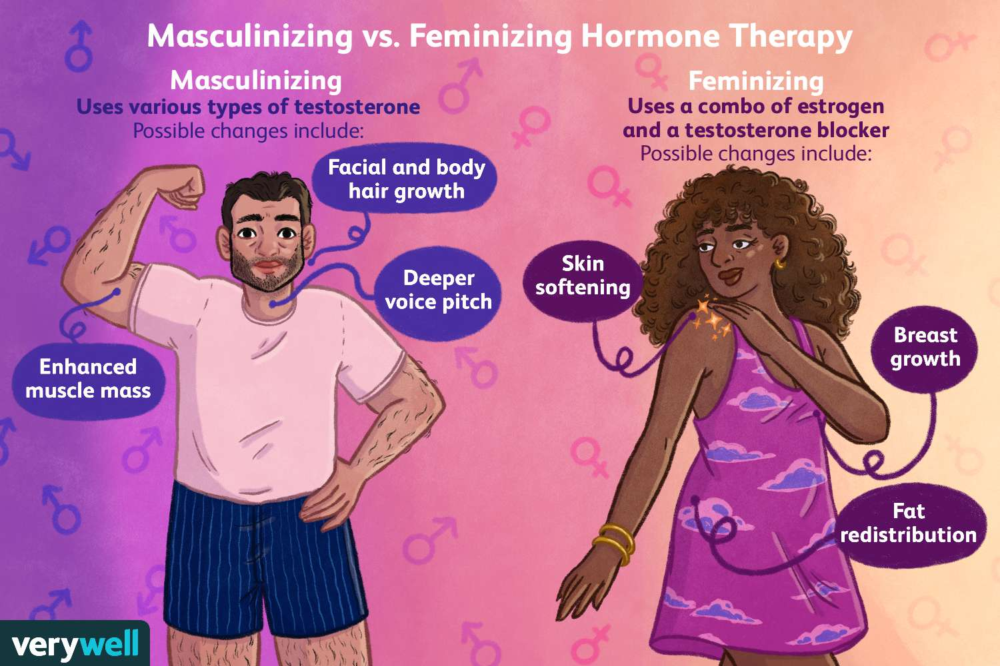
A minority of transgender people, around 15–30%, also pursue gender-affirming surgeryGender-affirming surgerySurgical procedures, pursued by a minority of transgender people, that bring the body into closer alignment with a person's gender identity.View in glossary → (Nolan et al., 2019; U.S. Trans Survey, 2022)ReferencesNolan, I. T., Kuhner, C. J., & Dy, G. W. (2019). Demographic and temporal trends in transgender identities and gender confirming surgery. Translational Andrology and Urology, 8(3), 184–190. https://doi.org/10.21037/tau.2019.04.09
U.S. Trans Survey. (2022). 2022 U.S. Trans Survey. https://ustranssurvey.org/. For trans women, options include breast augmentation, removal of the testes (orchiectomy), and genital surgery such as vaginoplasty. There are also more cosmetic procedures available, such as facial feminization surgery and reduction of the Adam's apple, as well as permanent hair removal. For trans men, one of the most commonly sought procedures is chest, or "top," surgery to create a flatter, more masculine chest. Some also choose to have their internal reproductive organs removed and to undergo genital surgeries such as phalloplasty, which construct a penis (Coleman et al., 2022)ReferenceColeman, E., Radix, A. E., Bouman, W. P., Brown, G. R., de Vries, A. L. C., Deutsch, M. B., Ettner, R., Fraser, L., Goodman, M., Green, J., … Arcelus, J. (2022). Standards of care for the health of transgender and gender diverse people, version 8. International Journal of Transgender Health, 23(Suppl 1), S1–S259. https://doi.org/10.1080/26895269.2022.2100644. These surgeries are permanent, are frequently performed in stages, and generally call for evaluation and letters of support from trained clinicians. Access is a significant barrier to these treatments. Many trans people report that the high cost of surgery, gaps in insurance coverage, and a shortage of qualified providers place these procedures out of reach (James et al., 2016)ReferenceJames, S. E., Herman, J. L., Rankin, S., Keisling, M., Mottet, L., & Anafi, M. (2016). The report of the 2015 U.S. Transgender Survey. National Center for Transgender Equality..
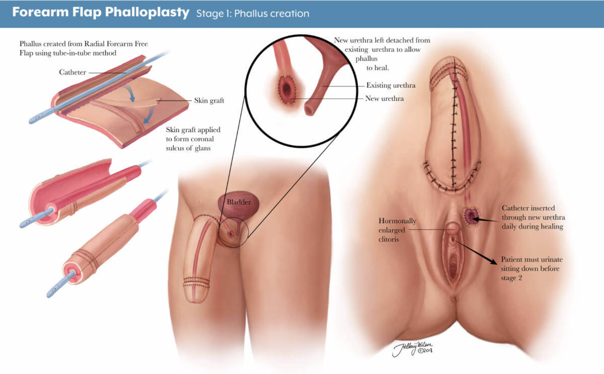
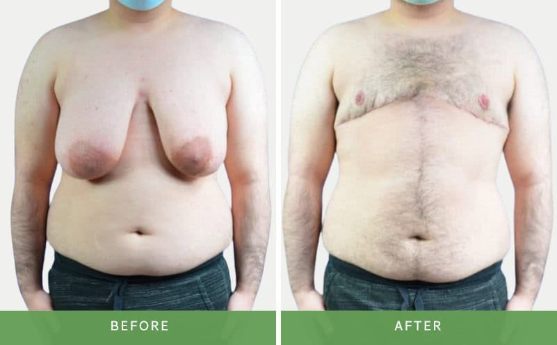
Across these social and medical paths, a consistent finding is that being able to transition, and being supported while doing so, is associated with lower levels of gender dysphoria and better mental health and quality of life (Dhejne et al., 2016; Coleman et al., 2022)ReferencesDhejne, C., Van Vlerken, R., Heylens, G., & Arcelus, J. (2016). Mental health and gender dysphoria: A review of the literature. International Review of Psychiatry, 28(1), 44–57. https://doi.org/10.3109/09540261.2015.1115753
Coleman, E., Radix, A. E., Bouman, W. P., Brown, G. R., de Vries, A. L. C., Deutsch, M. B., Ettner, R., Fraser, L., Goodman, M., Green, J., … Arcelus, J. (2022). Standards of care for the health of transgender and gender diverse people, version 8. International Journal of Transgender Health, 23(Suppl 1), S1–S259. https://doi.org/10.1080/26895269.2022.2100644. Furthermore, regretting undergoing transition procedures and "de-transitioning" — going from trans back to cisgender — is exceedingly rare. Among large samples, only around 1% of patients who undergo reconstructive surgery ever regret it (Bruce et al., 2023; Ren et al., 2024)ReferencesBruce, L., Khouri, A. N., Bolze, A., Ibarra, M., Richards, B., Khalatbari, S., Blasdel, G., Hamill, J. B., Hsu, J. J., Wilkins, E. G., Morrison, S. D., & Lane, M. (2023). Long-term regret and satisfaction with decision following gender-affirming mastectomy. JAMA Surgery, 158(10), 1070–1077. https://doi.org/10.1001/jamasurg.2023.3352
Ren, T., Galenchik-Chan, A., Erlichman, Z., & Krajewski, A. (2024). Prevalence of regret in gender-affirming surgery: A systematic review. Annals of Plastic Surgery, 92(5), 597–602. https://doi.org/10.1097/SAP.0000000000003895. Even fewer attempt to reverse it with further surgery. Around 2% of trans people who start hormone replacement therapy choose to discontinue their treatment within 5 years, indicating that the vast majority of people who undergo these procedures are happy with the results. Among those who do decide to "de-transition," the majority cite external pressures as their reason, such as facing harassment, discrimination, or not being accepted within their families (Shrivastava & Ghosh, 2026)ReferenceShrivastava, G., & Ghosh, A. (2026). Gender dysphoria and effects of gender-affirming medical care on mental health of transgender individuals: A systematic review and meta-synthesis. International Journal of Transgender Health, 1–29. https://doi.org/10.1080/26895269.2026.2633169.
It bears repeating that there is no single "correct" way to transition. The right path is the one that fits the individual, reached through informed decisions and, ideally, supportive care. For most trans people, that path involves little or no medical treatment at all. What shapes trans people's wellbeing most powerfully is not any one procedure but the surrounding social climate. Acceptance from family and friends tends to reduce distress, while discrimination, harassment, and barriers to care tend to increase it (James et al., 2016; American Psychological Association, 2015)ReferencesJames, S. E., Herman, J. L., Rankin, S., Keisling, M., Mottet, L., & Anafi, M. (2016). The report of the 2015 U.S. Transgender Survey. National Center for Transgender Equality.
American Psychological Association. (2015). Guidelines for psychological practice with transgender and gender nonconforming people. American Psychologist, 70(9), 832–864. https://doi.org/10.1037/a0039906.
What reason do the few people who de-transition most often give?
13.5 Prejudice, Progress, and Support
Throughout history, people have treated LGBTQ+ people with a wide range of responses, from open hostility to meaningful acceptance. The pendulum has swung many times, with prejudice and discrimination easing and then returning time and time again. Rather than delve into the full timeline of gay history, we'll focus on what psychologically drives prejudice and what mechanisms have been reliably shown to reduce stigma.
The Many Faces of Prejudice
Prejudice against LGBTQ+ people ranges from quiet assumptions to open hatred. At the subtle end is heterosexism (also called heteronormativityHeteronormativityThe built-in assumption that everyone is, or should be, heterosexual; another term for heterosexism.View in glossary →), the built-in assumption that everyone is straight and that being straight is the norm. This often shows up in unintended ways, such as asking a young man whether he has a girlfriend, or assuming a wedding ring means a person has an opposite-sex spouse. While often unintentional, it quietly signals that non-straight lives are unexpected and undervalued. Further along the spectrum is homophobiaHomophobiaA pattern of fear, discomfort, or hostility toward gay people.View in glossary →, a term coined in the early 1970s for a pattern of fear, discomfort, or hostility toward queer people (Weinberg, 1972)ReferenceWeinberg, G. (1972). Society and the healthy homosexual. St. Martin's Press.. This can spill over into outright discrimination and even violence. Scientists often use the term sexual prejudiceSexual prejudiceA broad term used by scientists for any form of negative attitude or prejudice directed at people because of their sexual orientation.View in glossary → to describe any form of prejudice toward sexual minorities (Herek, 2000)ReferenceHerek, G. M. (2000). The psychology of sexual prejudice. Current Directions in Psychological Science, 9(1), 19–22. https://doi.org/10.1111/1467-8721.00051.
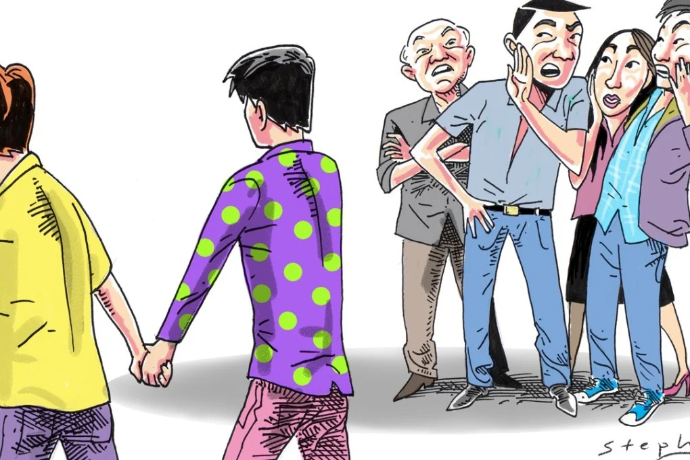
Where does sexual prejudice come from? Certainly, anti-queer messaging from family, peers, and institutions is one obvious source. Prejudice is fed by stereotypes, which often have little-to-no basis in reality. Gay men are stereotyped as flamboyant and hypersexual, lesbians as masculine and man-hating, and bisexual people as promiscuous or untrustworthy (Mize & Manago, 2018; Vaughn et al., 2017)ReferencesMize, T., & Manago, B. (2018). The stereotype content of sexual orientation. Social Currents, 5, 458–478. https://doi.org/10.1177/2329496518761999
Vaughn, A. A., Teeters, S. A., Sadler, M. S., & Cronan, S. B. (2017). Stereotypes, emotions, and behaviors toward lesbians, gay men, bisexual women, and bisexual men. Journal of Homosexuality, 64(13), 1890–1911. https://doi.org/10.1080/00918369.2016.1273718. When researchers measure things like relationship stability, number of partners, and relationship satisfaction, gay and straight people simply do not differ in the ways the stereotypes predict (APA, 2008; Chonody et al., 2020)ReferencesAmerican Psychological Association. (2008, January 23). Equal level of commitment and relationship satisfaction found among gay and heterosexual couples. ScienceDaily.
Chonody, J. M., Killian, M., Gabb, J., & Dunk-West, P. (2020). Relationship quality and sexuality: A latent profile analysis of long-term heterosexual and LGB long-term partnerships. Journal of Evidence-Based Social Work, 17(2), 203–225. https://doi.org/10.1080/26408066.2020.1723769. One especially damaging myth — that gay men are a danger to children — deserves direct correction: the research is clear that the vast majority of people who abuse children are heterosexual, and there is no evidence that gay men pose any greater risk to kids (Jenny et al., 1994; Seto, 2012)ReferencesJenny, C., Roesler, T. A., & Poyer, K. L. (1994). Are children at risk for sexual abuse by homosexuals? Pediatrics, 94(1), 41–44.
Seto, M. C. (2012). Is pedophilia a sexual orientation? Archives of Sexual Behavior, 41(1), 231–236. https://doi.org/10.1007/s10508-011-9882-6.
While many people may display sexual prejudice simply because they "absorbed" it from their surrounding culture, homophobia may play a defensive role for some. In one classic study, men who scored high on homophobia showed, on average, more physical arousal to same-sex imagery than men who scored low (Adams et al., 1996)ReferenceAdams, H. E., Wright, L. W., & Lohr, B. A. (1996). Is homophobia associated with homosexual arousal? Journal of Abnormal Psychology, 105(3), 440–445. https://doi.org/10.1037/0021-843X.105.3.440. A more recent study found similar results, where men who espoused more homophobic beliefs were also more likely to subconsciously identify words related to themselves (e.g., "Me") with words related to being homosexual (e.g., "Gay"; Weinstein et al., 2012ReferenceWeinstein, N., Ryan, W. S., DeHaan, C. R., Przybylski, A. K., Legate, N., & Ryan, R. M. (2012). Parental autonomy support and discrepancies between implicit and explicit sexual identities: Dynamics of self-acceptance and defense. Journal of Personality and Social Psychology, 102(4), 815–832. https://doi.org/10.1037/a0026854). This hints that anti-gay hostility can sometimes mask feelings a person cannot accept in themselves. It's worth noting, though, that it's unlikely this drives sexual prejudice among most people.
Prejudice can also be internalized. When LGBTQ+ people absorb society's negative messages and turn them inward, the result can be shame, anxiety, and depression. This pattern is termed internalized homophobiaInternalized homophobiaThe turning inward of society's anti-gay messages by LGBTQ+ people themselves, which can produce shame, anxiety, and depression.View in glossary →, and can greatly hinder the coming out process.
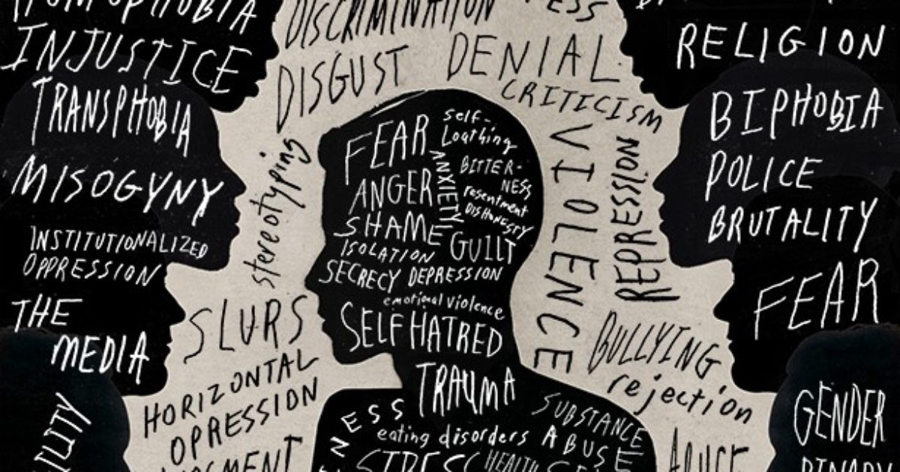
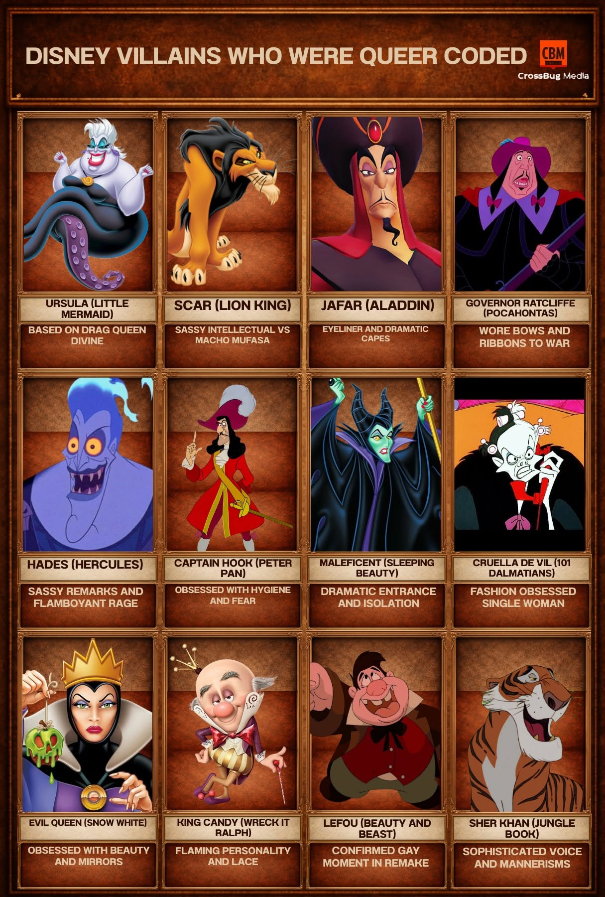
A teacher assumes every male student must have a girlfriend. This best illustrates:
The Toll on Mental Health
LGBTQ+ people, and LGBTQ+ teenagers in particular, experience higher rates of depression, anxiety, and suicidal thoughts than their straight and cisgender peers. It is essential to understand why. The explanation is not that being LGBTQ+ is itself a disorder — every major medical and psychological association rejects that idea. The accepted framework is the minority stress modelMinority stress modelThe model holding that the higher rates of mental-health problems among LGBTQ+ people are caused by chronic stigma, rejection, and discrimination rather than by their identity.View in glossary →, which holds that it is the chronic burden of stigma, rejection, and discrimination that drives these mental-health gaps (Meyer, 2003)ReferenceMeyer, I. H. (2003). Prejudice, social stress, and mental health in lesbian, gay, and bisexual populations: Conceptual issues and research evidence. Psychological Bulletin, 129(5), 674–697. https://doi.org/10.1037/0033-2909.129.5.674. Unsurprisingly, perpetually being the target of prejudice and discrimination makes people unwell.
Schools are a frequent flashpoint. Large shares of LGBTQ+ students report being harassed or bullied, and those who face the most hostility are far more likely to skip school, struggle academically, and consider self-harm. A 2024 national survey of LGBTQ+ youth conducted by the Trevor ProjectReferenceTrevor Project. (2025). 2024 U.S. national survey on the mental health of LGBTQ+ young people. https://www.thetrevorproject.org/ found that a majority, 52%, of middle and high-school students experienced intense, targeted bullying. Trans and nonbinary youth bear the heaviest burden, with 61% reporting persistent victimization.
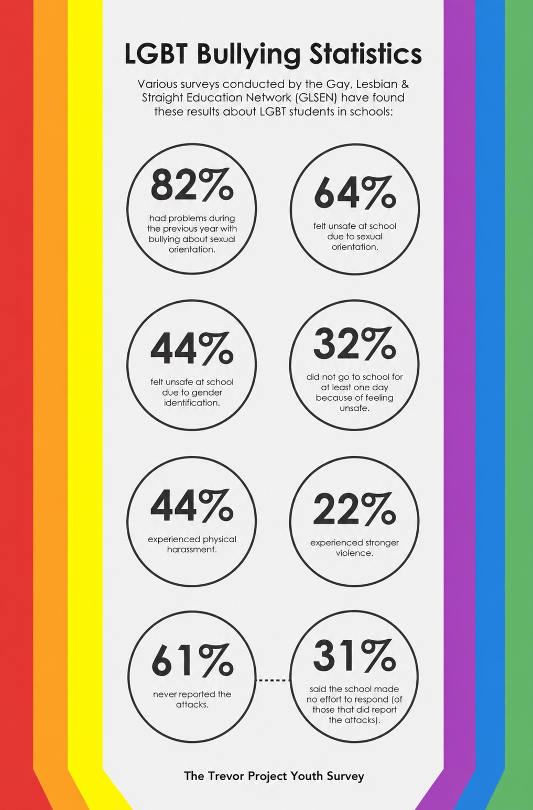
The encouraging flip side is that protection works. Family acceptance, supportive schools, the ability to be open safely, and student groups such as Gay-Straight AlliancesGay-Straight AllianceA student-led school club (also called a Gender and Sexuality Alliance) that supports LGBTQ+ students and is linked to better mental-health outcomes.View in glossary → (also called Gender and Sexuality Alliances) are all linked to markedly better mental health for LGBTQ+ youth (Russell & Fish, 2016)ReferenceRussell, S. T., & Fish, J. N. (2016). Mental health in lesbian, gay, bisexual, and transgender (LGBT) youth. Annual Review of Clinical Psychology, 12, 465–487. https://doi.org/10.1146/annurev-clinpsy-021815-093153. In practical terms, a single accepting adult can meaningfully lower a young person's risk of danger and self-harm.
Progress and Backlash
The legal landscape has shifted dramatically within living memory. Homosexuality was classified as a mental illness in the United States until 1973, when it was removed from the official diagnostic manual (American Psychiatric Association, 2013)ReferenceAmerican Psychiatric Association. (2013). Diagnostic and statistical manual of mental disorders (5th ed.). American Psychiatric Publishing.. In 2003, the Supreme Court struck down remaining laws that criminalized same-sex intimacy (Lawrence v. Texas, 2003)ReferenceLawrence v. Texas, 539 U.S. 558 (2003).. In 2015, the Court legalized same-sex marriage nationwide (Obergefell v. Hodges, 2015)ReferenceObergefell v. Hodges, 576 U.S. 644 (2015).. And in 2020, it ruled that firing someone for being gay or transgender is illegal sex discrimination under federal law (Bostock v. Clayton County, 2020)ReferenceBostock v. Clayton County, 590 U.S. 644 (2020).. Public opinion has moved alongside the law: a clear majority of Americans now support same-sex marriage and oppose discrimination based on orientation.
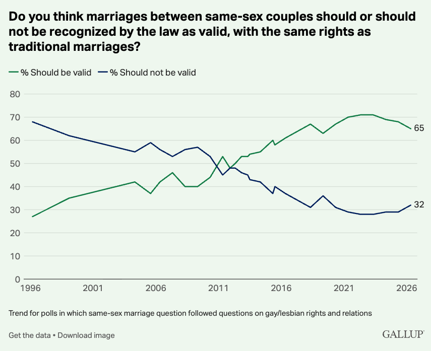
Progress has not been a straight line. Recent years have seen a wave of new legislation aimed at rolling back LGBTQ+ protections, frequently framed as protecting religious liberty. Much of this has focused on transgender people, including disputes over transgender youth's access to medical care, participation in sports, and use of gender-specific spaces. These are deeply contested areas of law and politics, with sincere arguments on multiple sides, and they remain unsettled.
One example of the shifting terrain is conversion therapyConversion therapyThe discredited and harmful practice of trying to change a person's sexual orientation or gender identity; condemned by every major medical and mental-health association.View in glossary → — a widely discredited form of "therapy" aimed at changing a person's orientation or gender identity. This practice has been condemned by every major medical association and has been linked to serious harm, including roughly doubled rates of suicide attempts among youth who undergo it. Around half of U.S. states had banned conversion therapy for minors, but a 2026 Supreme Court ruling overturned such bans, treating it as a form of protected speech (Chiles v. Salazar, 2026)ReferenceChiles v. Salazar, 606 U.S. ___ (2026).. The larger point is that rights won are not automatically permanent; they must be continually defended or they're often lost.
Reducing Prejudice and Finding Support
Decades of research shows that prejudice can be reliably reduced by three factors. The first is simple education. Stereotypes can be busted simply by learning the truth about how LGBTQ+ people live, that queer people are extremely similar in their personalities, goals, and love lives to straight and cisgender people. At the end of the day, we're all people, deserving of compassion, love, and respect.
The second factor is personally getting to know LGBTQ+ people. This further breaks down stereotypes, but also engenders more positive attitudes toward this group over time. This is often called the contact hypothesisContact hypothesisThe finding that continued, positive contact with members of a marginalized group tends to reduce prejudice against that group over time.View in glossary →, as continued and positive contact with a marginalized group is often enough on its own to significantly reduce prejudice. More and more people have an LGBTQ+ person in their lives — whether that's a family member, friend or neighbor. A recent national poll found that nearly 40% of Americans now personally know someone who is transgender, up significantly from just a decade ago (Gallup, 2026b)ReferenceGallup. (2026b). LGBTQ+ rights. https://news.gallup.com/poll/1651/Gay-Lesbian-Rights.aspx. Nearly double that percentage know someone who is lesbian or gay, with 25% reporting they have an immediate family member who is LGBTQ+ (Mitchell, 2016; Orcés, 2023)ReferencesMitchell, T. (2016, September 28). Vast majority of Americans know someone who is gay, fewer know someone who is transgender. Pew Research Center.
Orcés, D. (2023, August 24). Americans' perspectives on gender and proximity to the LGBTQ community. PRRI.. This increased visibility has likely done the greatest work in alleviating sexual prejudice over the last few decades.
Lastly, general visibility of LGBTQ+ in our culture at large has slowly but surely changed people's attitudes over time. Seeing gay and trans characters on TV has been shown to reduce stereotyping and prejudice, especially among people who don't have real-world contact with these groups (Schiappa et al., 2006)ReferenceSchiappa, E., Gregg, P. B., & Hewes, D. E. (2006). Can one TV show make a difference? Will & Grace and the parasocial contact hypothesis. Journal of Homosexuality, 51(4), 15–37. https://doi.org/10.1300/J082v51n04_02. Such effects have been shown across many popular shows featuring queer characters, such as Will & Grace, Queer Eye for the Straight Guy, and Modern Family (Bond, 2021)ReferenceBond, B. J. (2021). The development and influence of parasocial relationships with television characters: A longitudinal experimental test of prejudice reduction through parasocial contact. Communication Research, 48(4), 573–593. https://doi.org/10.1177/0093650219900632.

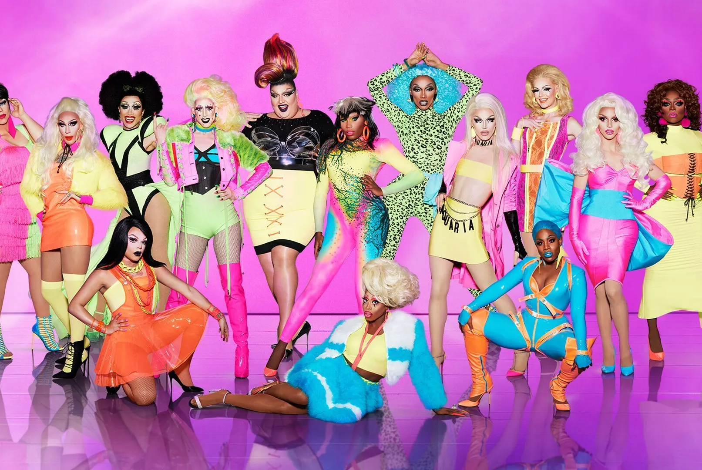
Why is personal contact with LGBTQ+ people such a powerful way to reduce prejudice?
Helpful Resources
If you would like to be an ally and further help the queer community, consider joining one of the following organizations:
- The Human Rights Campaign advocates for legal equality.
- PFLAG offers support to LGBTQ+ people and their families and friends.
- GLSEN works to make schools safer.
- GLAAD focuses on fair media representation.
- The Matthew Shepard Foundation works against hate crimes.
If you or someone you know is struggling, reaching out to a resource like these is a sign of strength, not weakness. There are several resources that you or anyone you know can use when facing bullying, sexual prejudice or mental health issues. These include:
- The Trevor Project: A 24/7 confidential suicide prevention and crisis intervention lifeline specifically for LGBTQ+ young people. You can call 1-866-488-7386 or text START to 678-678.
- The 988 Suicide & Crisis Lifeline: A free, national network of local crisis centers that provides 24/7 emotional support to anyone in suicidal crisis or emotional distress. You can call or text 988.
- The LGBT National Help Center: Provides free, confidential peer-support, information, and local resources for the LGBTQ+ community via telephone (1-888-843-4564) and online peer-chats.
- Crisis Text Line: A global non-profit organization providing free, 24/7 crisis intervention via text. Text HOME to 741741 to connect with a crisis counselor.
- StopBullying.gov: A federal resource provided by the U.S. Department of Health and Human Services that offers comprehensive toolkits and immediate steps for kids, parents, and schools dealing with active bullying.
- SAMHSA's National Helpline: The Substance Abuse and Mental Health Services Administration provides a 24/7, free, and confidential treatment referral and information service. You can call 1-800-662-4357.
Study Guide
After reading this chapter, you should be able to answer each of the questions below. They are grouped by section and are meant as open-ended prompts to test your understanding — try answering them in your own words before checking back in the chapter.
13.1 What Is Sexual Orientation?
- Define sexual orientation, and explain how it differs from gender identity and from biological sex.
- Explain the difference between identity, attraction, and behavior. Why might a person's answers on these three dimensions not line up?
- Compare the Kinsey Scale with later two-dimensional models. What problem with Kinsey's scale did the newer models fix?
- Describe Klein's Sexual Orientation Grid. What does it add beyond a single gay-to-straight rating?
- Define the terms transgender, cisgender, transmasculine, and transfeminine. Why does being transgender tell you about a person's gender rather than their sexual orientation?
- Using an example, explain why the claim that "the categories gay and straight are natural and universal" is historically and culturally inaccurate.
13.2 How Common Is It? Prevalence and Fluidity
- About what percentage of U.S. adults currently identify as LGBTQ+, and how has that figure changed over time? Which identity is the most common?
- Why do rates of LGBTQ+ identification differ so much across generations? What is the most likely explanation, and what is it not?
- What does the public tend to believe about how common homosexuality is, and how does that compare with reality?
- Define sexual fluidity and gender fluidity, and describe the average gender difference in sexual fluidity. Why is it important to say "on average"?
13.3 What Shapes Sexual Orientation?
- Give three findings that argue against the idea that upbringing alone determines sexual orientation.
- Explain what a heritability of about 32% means for sexual orientation. Why can there be no single "gay gene," and what role might epigenetics play?
- Describe the prenatal hormone theory, including the roles of androgens, the hypothalamus, and evidence from congenital adrenal hyperplasia. Name two biomarkers that have been linked to prenatal androgen exposure.
- What is the fraternal birth order effect, and what is the leading explanation for it? What clue tells us the cause is prenatal rather than social?
- Summarize the biological evidence that gender identity has roots in early brain development. What have postmortem and neuroimaging studies suggested about the brains of transgender people?
13.4 Living as a Sexual Minority
- Why is coming out described as a lifelong process rather than a single event? Summarize the general arc of the Cass model from confusion to synthesis.
- Distinguish social transition from medical transition. What does gender-affirming hormone therapy typically involve for a trans woman compared with a trans man?
- What does the research show about regret and "de-transition" following gender-affirming care, and what reasons do the few who de-transition most often cite?
13.5 Prejudice, Progress, and Support
- Distinguish heterosexism, homophobia, sexual prejudice, and internalized homophobia, and give an example of each.
- Using the minority stress model, explain why LGBTQ+ youth show higher rates of mental-health problems, and identify factors that protect them.
- Identify three approaches that research shows can reduce prejudice, and explain why personal contact (the contact hypothesis) is so powerful.
Key Terms
- Androgens
- A group of hormones, including testosterone, that guide male-typical development before birth and are central to the prenatal hormone theory of sexual orientation.
- Androphilic
- Sexually attracted to men. In the prenatal hormone theory, lower prenatal androgen exposure is linked to an androphilic pattern.
- Bisexual
- Describing a person attracted to more than one gender.
- Cisgender
- Describing a person whose gender identity matches the sex they were assigned at birth; such people are sometimes called a cis man or cis woman.
- Coming out
- The lifelong, repeated process of publicly acknowledging one's LGBTQ+ identity, which happens again and again because people are usually assumed to be straight.
- Congenital adrenal hyperplasia (CAH)
- A condition that exposes a developing fetus to unusually high levels of androgens; girls with CAH are somewhat more likely to be attracted to women, offering evidence for the prenatal hormone theory.
- Contact hypothesis
- The finding that continued, positive contact with members of a marginalized group tends to reduce prejudice against that group over time.
- Conversion therapy
- The discredited and harmful practice of trying to change a person's sexual orientation or gender identity; condemned by every major medical and mental-health association.
- Epigenetics
- Chemical tags that switch genes on or off without changing the DNA itself; epigenetic marks are one proposed influence on the development of sexual orientation.
- Fraternal birth order effect
- The reliable finding that gay men have, on average, more older biological brothers than straight men; each older brother raises the odds of being gay by roughly a third.
- Gay
- Attracted to the same sex or gender; often used for men specifically, and also as a broad term for anyone who is not heterosexual.
- Gay-Straight Alliance
- A student-led school club (also called a Gender and Sexuality Alliance) that supports LGBTQ+ students and is linked to better mental-health outcomes.
- Gender dysphoria
- The clinically significant distress that can arise from a mismatch between a person's body and their gender identity.
- Gender fluidity
- Flexibility or change over time in a person's own internal sense of their gender; documented most clearly in longitudinal studies of children and adolescents.
- Gender identity
- A person's own internal sense of being a man, a woman, both, or neither; distinct from sexual orientation.
- Gender-affirming hormone therapy
- Medical treatment that uses hormones to shift a person's secondary sex characteristics closer to their gender identity (estrogen and testosterone suppression for a trans woman; testosterone for a trans man).
- Gender-affirming surgery
- Surgical procedures, pursued by a minority of transgender people, that bring the body into closer alignment with a person's gender identity.
- Gynephilic
- Sexually attracted to women. In the prenatal hormone theory, higher prenatal androgen exposure is linked to a gynephilic pattern.
- Heteronormativity
- The built-in assumption that everyone is, or should be, heterosexual; another term for heterosexism.
- Heterosexism
- The built-in assumption that everyone is, or should be, heterosexual; usually unintentional but marginalizing. Also called heteronormativity.
- Heterosexual
- Attracted to a different sex or gender; commonly called "straight."
- Homophobia
- A pattern of fear, discomfort, or hostility toward gay people.
- Homosexual
- Attracted to the same sex or gender; commonly called "gay." The clinical-sounding term itself is fairly modern, coined in the late 1800s.
- Hypothalamus
- A small brain region involved in regulating sexual behavior; certain differences in it have been linked, on average, to sexual orientation.
- Internalized homophobia
- The turning inward of society's anti-gay messages by LGBTQ+ people themselves, which can produce shame, anxiety, and depression.
- Kinsey Scale
- A 0-to-6 scale, introduced by Alfred Kinsey, placing people along a continuum from exclusively heterosexual to exclusively homosexual.
- Klein Sexual Orientation Grid
- Fritz Klein's tool that measures orientation across several ingredients — attraction, behavior, fantasy, emotional and social preference, self-label, and change over time.
- Lesbian
- A woman attracted to other women.
- Minority stress model
- The model holding that the higher rates of mental-health problems among LGBTQ+ people are caused by chronic stigma, rejection, and discrimination rather than by their identity.
- Pansexual
- Attracted to people of all genders, with gender mattering little to the attraction.
- The idea that even one-sided "contact" with likable media figures, such as characters on television, can reduce prejudice much like real-world contact.
- Prenatal hormone theory
- The best-supported biological account of sexual orientation, proposing that the level of androgens a fetus is exposed to before birth shapes later attraction.
- Queer
- An umbrella term embraced by many who are not straight or gender-conforming; once a slur, now widely reclaimed, though not everyone is comfortable with it.
- Sexual fluidity
- Real change over time in a person's attractions, behavior, or identity; somewhat more common on average in women.
- Sexual orientation
- An enduring pattern of emotional, romantic, or sexual attraction to others.
- Sexual prejudice
- A broad term used by scientists for any form of negative attitude or prejudice directed at people because of their sexual orientation.
- Changing the outward, everyday aspects of gender presentation — such as name, pronouns, clothing, and documents — without any medical intervention; largely reversible.
- Transfeminine
- An umbrella term for people assigned male at birth who move in a feminine direction, especially those who do not identify strictly as women.
- Transgender
- Describing a person whose gender identity differs from the sex they were assigned at birth; a transgender person can have any sexual orientation.
- Transitioning
- The process of bringing one's outward life and body into alignment with one's true gender identity, which may unfold across social, legal, and medical dimensions.
- Transmasculine
- An umbrella term for people assigned female at birth who move in a masculine direction, especially those who do not identify strictly as men.
- Trans man
- A person assigned female at birth who identifies and lives as a man; also referred to as female-to-male, or FTM.
- Trans woman
- A person assigned male at birth who identifies and lives as a woman; also referred to as male-to-female, or MTF.
- Two-Spirit
- A term used by some Indigenous North American peoples for individuals who blend masculine and feminine roles, historically often honored as spiritual leaders.
References
- Adams, H. E., Wright, L. W., & Lohr, B. A. (1996). Is homophobia associated with homosexual arousal? Journal of Abnormal Psychology, 105(3), 440–445. https://doi.org/10.1037/0021-843X.105.3.440
- American Psychiatric Association. (2013). Diagnostic and statistical manual of mental disorders (5th ed.). American Psychiatric Publishing.
- American Psychological Association. (2008, January 23). Equal level of commitment and relationship satisfaction found among gay and heterosexual couples. ScienceDaily. Retrieved July 20, 2026, from www.sciencedaily.com/releases/2008/01/080122101929.htm
- American Psychological Association. (2015). Guidelines for psychological practice with transgender and gender nonconforming people. American Psychologist, 70(9), 832–864. https://doi.org/10.1037/a0039906
- American Psychological Association. (2021). Sexual orientation and gender diversity. https://www.apa.org/topics/lgbtq
- Avila-Saavedra, G. (2009). Nothing queer about queer television: Televized construction of gay masculinities. Media, Culture & Society, 31(1), 5–21.
- Bailey, J. M., & Pillard, R. C. (1991). A genetic study of male sexual orientation. Archives of General Psychiatry, 48(12), 1089–1096. https://doi.org/10.1001/archpsyc.1991.01810360053008
- Bailey, J. M., Pillard, R. C., Neale, M. C., & Agyei, Y. (1993). Heritable factors influence sexual orientation in women. Archives of General Psychiatry, 50(3), 217–223.
- Bailey, N. W., & Zuk, M. (2009). Same-sex sexual behavior and evolution. Trends in Ecology & Evolution, 24(8), 439–446.
- Balter, M. (2015). Can epigenetics explain homosexuality puzzle? Science, 350(6257), 148. https://doi.org/10.1126/science.350.6257.148
- Bao, A., & Swaab, D. F. (2011). Sexual differentiation of the human brain: Relation to gender identity, sexual orientation and neuropsychiatric disorders. Frontiers in Neuroendocrinology, 32(2), 214–226. https://doi.org/10.1016/j.yfrne.2011.02.007
- Berglund, H., Lindström, P., & Savic, I. (2006). Brain response to putative pheromones in lesbian women. Proceedings of the National Academy of Sciences, 103(21), 8269–8274. https://doi.org/10.1073/pnas.0600331103
- Blanchard, R., & Bogaert, A. F. (1996). Homosexuality in men and number of older brothers. American Journal of Psychiatry, 153(1), 27–31. https://doi.org/10.1176/ajp.153.1.27
- Blanchard, R. (2018). Fraternal birth order, family size, and male homosexuality: Meta-analysis of studies spanning 25 years. Archives of Sexual Behavior, 47(1), 1–15. https://doi.org/10.1007/s10508-017-1007-4
- Bogaert, A. F. (2006). Biological versus nonbiological older brothers and men's sexual orientation. Proceedings of the National Academy of Sciences, 103(28), 10771–10774. https://doi.org/10.1073/pnas.0511152103
- Bogaert, A. F., Skorska, M. N., Wang, C., Gabrie, J., MacNeil, A. J., Hoffarth, M. R., VanderLaan, D. P., Zucker, K. J., & Blanchard, R. (2018). Male homosexuality and maternal immune responsivity to the Y-linked protein NLGN4Y. Proceedings of the National Academy of Sciences, 115(2), 302–306. https://doi.org/10.1073/pnas.1705895114
- Bond, B. J. (2021). The development and influence of parasocial relationships with television characters: A longitudinal experimental test of prejudice reduction through parasocial contact. Communication Research, 48(4), 573–593. https://doi.org/10.1177/0093650219900632
- Bos, H., Knox, J. R., van Rijn-van Gelderen, L., & Gartrell, N. K. (2016). Same-sex and different-sex parent households and child health outcomes. Journal of Developmental & Behavioral Pediatrics, 37(3), 179–187. https://doi.org/10.1097/DBP.0000000000000288
- Bostock v. Clayton County, 590 U.S. 644 (2020).
- Bragazzi, N., Farah, R., & Khamisy-Farah, R. (2026). Unraveling the genetics of sexual orientation: A historical and contemporary perspective. The Israel Medical Association Journal, 28, 126–132.
- Breedlove, S. M. (2017). Prenatal influences on human sexual orientation: Expectations versus data. Archives of Sexual Behavior, 46(6), 1583–1592. https://doi.org/10.1007/s10508-016-0904-2
- Bruce, L., Khouri, A. N., Bolze, A., Ibarra, M., Richards, B., Khalatbari, S., Blasdel, G., Hamill, J. B., Hsu, J. J., Wilkins, E. G., Morrison, S. D., & Lane, M. (2023). Long-term regret and satisfaction with decision following gender-affirming mastectomy. JAMA Surgery, 158(10), 1070–1077. https://doi.org/10.1001/jamasurg.2023.3352
- Burkle-Young, F. A., & Doerrer, M. L. (1997). The life of Cardinal Innocenzo del Monte: A scandal in scarlet; together with materials for a history of the House of Ciocchi del Monte San Savino. Edwin Mellen Press.
- Byne, W., Tobet, S., Mattiace, L. A., Lasco, M. S., Kemether, E., Edgar, M. A., Morgello, S., Buchsbaum, M. S., & Jones, L. B. (2001). The interstitial nuclei of the human anterior hypothalamus: An investigation of variation with sex, sexual orientation, and HIV status. Hormones and Behavior, 40(2), 86–92. https://doi.org/10.1006/hbeh.2001.1680
- Campana, M., Duffy, K., & Micheli, M. R. (2022). "We're all born naked and the rest is drag": Spectacularization of core stigma in RuPaul's Drag Race. Journal of Management Studies, 59(8), 1950–1986. https://doi.org/10.1111/joms.12848
- Cass, V. C. (1979). Homosexual identity formation: A theoretical model. Journal of Homosexuality, 4(3), 219–235. https://doi.org/10.1300/J082v04n03_01
- Charvel, P. U., Kaniuka, A. R., Denis, K., Jiménez, E., Brienzo, M. J., Job, S. A., Abaya, R., Motley, D., & Brooks, B. D. (2025). The impact of RuPaul's Drag Race on cisgender, heterosexual individuals' understanding of LGBTQ+ experiences. Psychology of Popular Media, 14(3), 449–457. https://doi.org/10.1037/ppm0000558
- Chiles v. Salazar, 606 U.S. ___ (2026).
- Chonody, J. M., Killian, M., Gabb, J., & Dunk-West, P. (2020). Relationship quality and sexuality: A latent profile analysis of long-term heterosexual and LGB long-term partnerships. Journal of Evidence-Based Social Work, 17(2), 203–225. https://doi.org/10.1080/26408066.2020.1723769
- Coleman, E. (1982). Developmental stages of the coming out process. Journal of Homosexuality, 7(2–3), 31–43. https://doi.org/10.1300/J082v07n02_06
- Coleman, E., Radix, A. E., Bouman, W. P., Brown, G. R., de Vries, A. L. C., Deutsch, M. B., Ettner, R., Fraser, L., Goodman, M., Green, J., Hancock, A. B., Johnson, T. W., Karasic, D. H., Knudson, G. A., Leibowitz, S. F., Meyer-Bahlburg, H. F. L., Monstrey, S. J., Motmans, J., Nahata, L., … Arcelus, J. (2022). Standards of care for the health of transgender and gender diverse people, version 8. International Journal of Transgender Health, 23(Suppl 1), S1–S259. https://doi.org/10.1080/26895269.2022.2100644
- Copen, C. E., Chandra, A., & Febo-Vazquez, I. (2016). Sexual behavior, sexual attraction, and sexual orientation among adults aged 18–44 in the United States: Data from the 2011–2013 National Survey of Family Growth. National Health Statistics Reports, (88), 1–14.
- Crompton, L. (2004). Julius III. In glbtq: An encyclopedia of gay, lesbian, bisexual, transgender, and queer culture.
- Delhez, A., Lefebvre, P., Péqueux, C., Malgrange, B., & Delacroix, L. (2019). Auditory function and dysfunction: Estrogen makes a difference. Cellular and Molecular Life Sciences: CMLS, 77(4), 619–635. https://doi.org/10.1007/s00018-019-03295-y
- Dhejne, C., Van Vlerken, R., Heylens, G., & Arcelus, J. (2016). Mental health and gender dysphoria: A review of the literature. International Review of Psychiatry, 28(1), 44–57. https://doi.org/10.3109/09540261.2015.1115753
- Diamond, L. M. (2008). Sexual fluidity: Understanding women's love and desire. Harvard University Press.
- Diamond, L. M. (2014). Gender and same-sex sexuality. In D. L. Tolman & L. M. Diamond (Eds.), APA handbook of sexuality and psychology (Vol. 1, pp. 629–652). American Psychological Association.
- Diamond, L. M. (2020). Gender fluidity and nonbinary gender identities among children and adolescents. Child Development Perspectives, 14(2), 110–115. https://doi.org/10.1111/cdep.12366
- Gallup. (2019). Americans still greatly overestimate U.S. gay population. https://news.gallup.com/poll/259571
- Gallup. (2026a). LGBTQ+ identification in the U.S. https://news.gallup.com/poll/702206
- Gallup. (2026b). LGBTQ+ rights. https://news.gallup.com/poll/1651/Gay-Lesbian-Rights.aspx
- Ganna, A., Verweij, K. J. H., Nivard, M. G., Maier, R., Wedow, R., Busch, A. S., Abdellaoui, A., Guo, S., Sathirapongsasuti, J. F., 23andMe Research Team, Lichtenstein, P., Lundström, S., Långström, N., Auton, A., Harris, K. M., Beecham, G. W., Martin, E. R., Sanders, A. R., Perry, J. R. B., … Zietsch, B. P. (2019). Large-scale GWAS reveals insights into the genetic architecture of same-sex sexual behavior. Science, 365(6456), eaat7693. https://doi.org/10.1126/science.aat7693
- Garcia-Falgueras, A., & Swaab, D. F. (2008). A sex difference in the hypothalamic uncinate nucleus: Relationship to gender identity. Brain, 131(12), 3132–3146. https://doi.org/10.1093/brain/awn276
- Gómez, J. M., Gónzalez-Megías, A., & Verdú, M. (2023). The evolution of same-sex sexual behaviour in mammals. Nature Communications, 14(1), 5719. https://doi.org/10.1038/s41467-023-41290-x
- Grimbos, T., Dawood, K., Burriss, R. P., Zucker, K. J., & Puts, D. A. (2010). Sexual orientation and the second to fourth finger length ratio: A meta-analysis in men and women. Behavioral Neuroscience, 124(2), 278–287. https://doi.org/10.1037/a0018764
- Guillamon, A., Junque, C., & Gómez-Gil, E. (2016). A review of the status of brain structure research in transsexualism. Archives of Sexual Behavior, 45(7), 1615–1648. https://doi.org/10.1007/s10508-016-0768-5
- Hembree, W. C., Cohen-Kettenis, P. T., Gooren, L., Hannema, S. E., Meyer, W. J., Murad, M. H., Rosenthal, S. M., Safer, J. D., Tangpricha, V., & T'Sjoen, G. G. (2017). Endocrine treatment of gender-dysphoric/gender-incongruent persons: An Endocrine Society clinical practice guideline. The Journal of Clinical Endocrinology & Metabolism, 102(11), 3869–3903. https://doi.org/10.1210/jc.2017-01658
- Henley, C. L., Nunez, A. A., & Clemens, L. G. (2010). Exogenous androgen during development alters adult partner preference and mating behavior in gonadally intact male rats. Hormones and Behavior, 57(4–5), 488–495. https://doi.org/10.1016/j.yhbeh.2010.02.007
- Herek, G. M. (2000). The psychology of sexual prejudice. Current Directions in Psychological Science, 9(1), 19–22. https://doi.org/10.1111/1467-8721.00051
- Herman, R. A., Jones, B., Mann, D. R., & Wallen, K. (2000). Timing of prenatal androgen exposure: Anatomical and endocrine effects on juvenile male and female rhesus monkeys. Hormones and Behavior, 38(1), 52–66. https://doi.org/10.1006/hbeh.2000.1608
- Heylens, G., De Cuypere, G., Zucker, K. J., Schelfaut, C., Elaut, E., Vanden Bossche, H., De Baere, E., & T'Sjoen, G. (2012). Gender identity disorder in twins: A review of the case report literature. The Journal of Sexual Medicine, 9(3), 751–757. https://doi.org/10.1111/j.1743-6109.2011.02567.x
- Hines, M. (2011). Prenatal endocrine influences on sexual orientation and on sexually differentiated childhood behavior. Frontiers in Neuroendocrinology, 32(2), 170–182. https://doi.org/10.1016/j.yfrne.2011.02.006
- Hu, D., Rodkong, A., Folkierska-Zukowska, M., Skorska, M., Saokhieo, P., Peragine, D., Javier, C., Thurston, L., Jones, S., Supintham, T., Kaewthip, O., Wantanajittikul, K., Chariyalertsak, S., Saekho, S., & Vanderlaan, D. (2025). Brain imaging of hypothalamic volumes in relation to sexual and gender diversity in Thailand. https://doi.org/10.13140/RG.2.2.29308.81285
- James, S. E., Herman, J. L., Rankin, S., Keisling, M., Mottet, L., & Anafi, M. (2016). The report of the 2015 U.S. Transgender Survey. National Center for Transgender Equality.
- Jenny, C., Roesler, T. A., & Poyer, K. L. (1994). Are children at risk for sexual abuse by homosexuals? Pediatrics, 94(1), 41–44.
- Johnson, K. L., Gill, S., Reichman, V., & Tassinary, L. G. (2007). Swagger, sway, and sexuality: Judging sexual orientation from body motion and morphology. Journal of Personality and Social Psychology, 93(3), 321–334. https://doi.org/10.1037/0022-3514.93.3.321
- Katz, J. N. (2007). The invention of heterosexuality. University of Chicago Press.
- Kinsey, A. C., Pomeroy, W. B., & Martin, C. E. (1948). Sexual behavior in the human male. W. B. Saunders.
- Klein, F. (1978). The bisexual option. Arbor House.
- Kruijver, F. P., Zhou, J. N., Pool, C. W., Hofman, M. A., Gooren, L. J., & Swaab, D. F. (2000). Male-to-female transsexuals have female neuron numbers in a limbic nucleus. The Journal of Clinical Endocrinology and Metabolism, 85(5), 2034–2041. https://doi.org/10.1210/jcem.85.5.6564
- Lawrence v. Texas, 539 U.S. 558 (2003).
- LeVay, S. (1991). A difference in hypothalamic structure between heterosexual and homosexual men. Science, 253(5023), 1034–1037. https://doi.org/10.1126/science.1887219
- Meyer, I. H. (2003). Prejudice, social stress, and mental health in lesbian, gay, and bisexual populations: Conceptual issues and research evidence. Psychological Bulletin, 129(5), 674–697. https://doi.org/10.1037/0033-2909.129.5.674
- Meyer-Bahlburg, H. F. L., Dolezal, C., Baker, S. W., & New, M. I. (2008). Sexual orientation in women with classical or non-classical congenital adrenal hyperplasia as a function of degree of prenatal androgen excess. Archives of Sexual Behavior, 37(1), 85–99. https://doi.org/10.1007/s10508-007-9265-1
- Mitchell, T. (2016, September 28). Vast majority of Americans know someone who is gay, fewer know someone who is transgender. Pew Research Center. https://www.pewresearch.org/religion/2016/09/28/5-vast-majority-of-americans-know-someone-who-is-gay-fewer-know-someone-who-is-transgender/
- Mize, T., & Manago, B. (2018). The stereotype content of sexual orientation. Social Currents, 5, 458–478. https://doi.org/10.1177/2329496518761999
- Nolan, I. T., Kuhner, C. J., & Dy, G. W. (2019). Demographic and temporal trends in transgender identities and gender confirming surgery. Translational Andrology and Urology, 8(3), 184–190. https://doi.org/10.21037/tau.2019.04.09
- Obergefell v. Hodges, 576 U.S. 644 (2015).
- Olson, K. R., Durwood, L., DeMeules, M., & McLaughlin, K. A. (2016). Mental health of transgender children who are supported in their identities. Pediatrics, 137(3), e20153223. https://doi.org/10.1542/peds.2015-3223
- Orcés, D. (2023, August 24). Americans' perspectives on gender and proximity to the LGBTQ community. PRRI. https://prri.org/spotlight/americans-perspectives-on-gender-and-proximity-to-the-lgbtq-community/
- Oxford Reference. (n.d.). Sapphism. In An Oxford companion to the Romantic Age.
- Pew Research Center. (2013). A survey of LGBT Americans: Attitudes, experiences and values in changing times. https://www.pewresearch.org/social-trends/2013/06/13/a-survey-of-lgbt-americans
- Reiner, W. G., & Gearhart, J. P. (2004). Discordant sexual identity in some genetic males with cloacal exstrophy assigned to female sex at birth. The New England Journal of Medicine, 350(4), 333–341. https://doi.org/10.1056/NEJMoa022236
- Ren, T., Galenchik-Chan, A., Erlichman, Z., & Krajewski, A. (2024). Prevalence of regret in gender-affirming surgery: A systematic review. Annals of Plastic Surgery, 92(5), 597–602. https://doi.org/10.1097/SAP.0000000000003895
- Rice, W. R., Friberg, U., & Gavrilets, S. (2012). Homosexuality as a consequence of epigenetically canalized sexual development. The Quarterly Review of Biology, 87(4), 343–368. https://doi.org/10.1086/668167
- Rieger, G., Linsenmeier, J. A. W., Gygax, L., Garcia, S., & Bailey, J. M. (2010). Dissecting "gaydar": Accuracy and the role of masculinity–femininity. Archives of Sexual Behavior, 39(1), 124–140. https://doi.org/10.1007/s10508-008-9405-2
- Robinson, M. (2020). Two-spirit identity in a time of gender fluidity. Journal of Homosexuality, 67(12), 1675–1690. https://doi.org/10.1080/00918369.2019.1613853
- Roselli, C. E., & Stormshak, F. (2009). The neurobiology of sexual partner preferences in rams. Hormones and Behavior, 55(5), 611–620. https://doi.org/10.1016/j.yhbeh.2009.03.013
- Rule, N. O., & Ambady, N. (2008). Brief exposures: Male sexual orientation is accurately perceived at 50 ms. Journal of Experimental Social Psychology, 44(4), 1100–1105. https://doi.org/10.1016/j.jesp.2007.12.001
- Russell, S. T., & Fish, J. N. (2016). Mental health in lesbian, gay, bisexual, and transgender (LGBT) youth. Annual Review of Clinical Psychology, 12, 465–487. https://doi.org/10.1146/annurev-clinpsy-021815-093153
- Russo, V. (1987). The celluloid closet: Homosexuality in the movies (Rev. ed.). Harper & Row.
- Savic, I., Berglund, H., & Lindström, P. (2005). Brain response to putative pheromones in homosexual men. Proceedings of the National Academy of Sciences, 102(20), 7356–7361. https://doi.org/10.1073/pnas.0407998102
- Schiappa, E., Gregg, P. B., & Hewes, D. E. (2006). Can one TV show make a difference? Will & Grace and the parasocial contact hypothesis. Journal of Homosexuality, 51(4), 15–37. https://doi.org/10.1300/J082v51n04_02
- Seto, M. C. (2012). Is pedophilia a sexual orientation? Archives of Sexual Behavior, 41(1), 231–236. https://doi.org/10.1007/s10508-011-9882-6
- Shrivastava, G., & Ghosh, A. (2026). Gender dysphoria and effects of gender-affirming medical care on mental health of transgender individuals: A systematic review and meta-synthesis. International Journal of Transgender Health, 1–29. https://doi.org/10.1080/26895269.2026.2633169
- Steensma, T. D., McGuire, J. K., Kreukels, B. P. C., Beekman, A. J., & Cohen-Kettenis, P. T. (2013). Factors associated with desistence and persistence of childhood gender dysphoria: A quantitative follow-up study. Journal of the American Academy of Child & Adolescent Psychiatry, 52(6), 582–590. https://doi.org/10.1016/j.jaac.2013.03.016
- Strozier, C. B. (2016). Your friend forever, A. Lincoln: The enduring friendship of Abraham Lincoln and Joshua Speed. Columbia University Press.
- Swift-Gallant, A., Aung, T., Rosenfield, K., Dawood, K., & Puts, D. (2023). Organizational effects of gonadal hormones on human sexual orientation. Adaptive Human Behavior and Physiology, 9(4), 344–370. https://doi.org/10.1007/s40750-023-00226-x
- T'Sjoen, G., Arcelus, J., Gooren, L., Klink, D. T., & Tangpricha, V. (2019). Endocrinology of transgender medicine. Endocrine Reviews, 40(1), 97–117. https://doi.org/10.1210/er.2018-00011
- Thornton, J., Zehr, J. L., & Loose, M. D. (2009). Effects of prenatal androgens on rhesus monkeys: A model system to explore the organizational hypothesis in primates. Hormones and Behavior, 55(5), 633–644. https://doi.org/10.1016/j.yhbeh.2009.03.015
- Trevor Project. (2025). 2024 U.S. national survey on the mental health of LGBTQ+ young people. https://www.thetrevorproject.org/
- U.S. Trans Survey. (2022). 2022 U.S. Trans Survey. https://ustranssurvey.org/
- Unger, C. A. (2016). Hormone therapy for transgender patients. Translational Andrology and Urology, 5(6), 877–884. https://doi.org/10.21037/tau.2016.09.04
- Vaughn, A. A., Teeters, S. A., Sadler, M. S., & Cronan, S. B. (2017). Stereotypes, emotions, and behaviors toward lesbians, gay men, bisexual women, and bisexual men. Journal of Homosexuality, 64(13), 1890–1911. https://doi.org/10.1080/00918369.2016.1273718
- Weinberg, G. (1972). Society and the healthy homosexual. St. Martin's Press.
- Weinstein, N., Ryan, W. S., DeHaan, C. R., Przybylski, A. K., Legate, N., & Ryan, R. M. (2012). Parental autonomy support and discrepancies between implicit and explicit sexual identities: Dynamics of self-acceptance and defense. Journal of Personality and Social Psychology, 102(4), 815–832. https://doi.org/10.1037/a0026854
- Wilson, B. D. M., Bouton, L. J. A., Badgett, M. V. L., & Macklin, M. L. (2023). LGBT poverty in the United States: Trends at the onset of COVID-19. Williams Institute, UCLA School of Law.
- Wilson, R. (2012). Aspects of queer existence in 19th-century America. OutHistory.
- Xu, Y., Norton, S., & Rahman, Q. (2017). Sexual orientation and neurocognitive ability: A meta-analysis in men and women. Neuroscience & Biobehavioral Reviews, 83, 691–696. https://doi.org/10.1016/j.neubiorev.2017.06.014
- Zhou, J.-N., Hofman, M. A., Gooren, L. J. G., & Swaab, D. F. (1995). A sex difference in the human brain and its relation to transsexuality. Nature, 378(6552), 68–70. https://doi.org/10.1038/378068a0